Saga Forge user guide
Saga Forge is a desktop editor for the campaign side of Starsector mods: factions, people, items, quests and dialog, star systems and the fleets the player meets. You plan a quest as a flow chart, see each dialog the way the game will draw it, play it through in the editor, and export a mod that works the way vanilla does, so it stays compatible with other mods.
This guide goes tab by tab. Every tab has two parts:
- How it works: what the tab is for, its parts, what it writes into your mod and where that shows up in game.
- How to set up the basics: short recipes for the common things you do there.
Each tab's section stands on its own. Read the one you need. When a recipe needs something from another tab (a character for a quest, a place for a fleet), it links to that tab's recipe instead of explaining it again.
Reading it offline: the same guide as one page with a contents sidebar and screenshots that open full size is guide.html (open it in your browser). It is also a download on the Releases page: SagaForge-UserGuide-<version>.zip.
Contents
| Tab | What you do there |
|---|---|
| Getting started and Settings | Point Saga Forge at the game, choose your mods folder, create or open a mod, move a mod to a new game version |
| Saga | The whole mod at a glance: storyline board, timeline, flags, test profiles, phrases, random pools, scatter, world events, progress events, the other mods it works with, its LunaLib settings page, MagicLib achievements, Nexerelin's quest skip, Vaults of Knowledge research |
| Factions | New factions, and changes to existing ones (yours or vanilla's) |
| People | Characters: contacts, market staff, quest givers |
| Items | Commodities and special items, such as a quest item |
| Quests | Quests and conversations as flow charts (fights, plugins, node groups), with a dialog preview, a token window and Play mode |
| Locations | Star systems, planets, stations, markets, wrecks and caches |
| Encounters | Fleets the player meets: for a quest, at new game, roaming, fleets that stop the player; what happens when they are beaten |
| Fleets | Named fleets with their own ships and captain, fleet type names |
| Images | The mod's flags, crests, portraits, icons and illustrations, in groups, and your original pictures |
| Dialog | Browse every dialog rule of the game and your installed mods |
| Problems | What's missing or wrong before you export, and Check mod |
| Export and Release | Write the game files, make a release zip, release an update |
| Translation mods | Translate a Saga Forge mod into another language, as a separate mod |
Before you start
- The game. Saga Forge works with Starsector 0.98a and 0.98.5a. It only ever reads the game folder and the mods installed there; it writes only into the mod you are editing.
- SagaLib. Quests, people, star systems, encounters and the other runtime parts are exported as data that the free library mod SagaLib runs in game, so your mod needs no code. When your mod uses it, players need SagaLib enabled next to your mod (1.3 for content that depends on other mods, 1.4 for the newest features such as Fight nodes, plugins, mixed fleets and versions by the player's gender), and the export adds it to your
mod_info.jsondependencies, with the version your mod needs (see Export the mod). - Where to get them. Saga Forge: Starsector-SagaForge (download the zip from Releases, unzip, run
Saga Forge.exe). SagaLib: Starsector-SagaLib.
The example mods in the pictures
The screenshots show two mods made with Saga Forge:
- Heliopolis (prefix
hel_): cats in space. A Domain-era uplift program left a station of cats who fly ships through their collars. It has two factions (Heliopolis and the hidden Custodian), three star systems (Ailuros with the station Felicette, Kythera, Persea), twenty characters (Tyger, Mousey, Butters, Keeper Nyx …), 32 quests and conversations (The Voice in the Probe, Persea, The Great Cat of Heliopolis …), named fleets, random encounters, a progress event (Hegemony suspicion), random pools, objects scattered across the sector, a world event, LunaLib settings, MagicLib achievements, Nexerelin support, Vaults of Knowledge research and a plugin of its own. Most pictures show it. - The Other Captain (prefix
toc_): someone has been evading taxes under the player's name. A comedy questline about John Starsector (Jane, for a female player), the Foundling Wheel orphanage and a Hegemony warrant that keeps growing. It shows a fleet that hails and stops the player, the Fleet response node group, partly random fleets, encounter outcomes, a crisis bar and original images.
The translation pictures show a German translation of Heliopolis, made only for this guide, and the guide's copy of The Other Captain also changes the Hegemony a little (its Revenue Service flies Kites), to show a change to an existing faction. The pictures were taken on Starsector 0.98a with MagicLib, LunaLib, Nexerelin and AoTD Vaults of Knowledge installed.
Saga Forge's own small example mod, Vanguard Compact (VanguardCompact-<version>.zip on the same Releases page, or the example folder of the source), is still there to open and look at.
Words used in this guide
| Word | Meaning |
|---|---|
| Vanilla | The base game, without mods. |
| The active mod | The mod you are editing, picked in the header. Saga Forge writes only into this mod's folder. |
| Id | The name the game uses for something internally (hel_tyger). Players never see it; saves remember things by it, so change it only with the app's Change id…. |
| Prefix | A few letters every id of your mod starts with (hel_), so your ids never clash with other mods'. Saga Forge asks for it once per mod. |
| Plans | What Saga Forge saves (Save, Ctrl+S): your work, in the mod's sagaforge folder. The game doesn't read them. |
| Export | Writes the game files (rules.csv, .faction files, CSV rows, SagaLib's data) from your plans. Until you export, the game doesn't see your changes. |
| Memory keys / flags | Values the game remembers in a save, such as $global.hel_believed_tyger. Quests set and read them. |
| Dev mode | Starsector's developer mode (devMode in the game's settings.json). Test profiles are started from its menu (Ctrl+F9 with SagaLib). |
Getting started and Settings
How Saga Forge finds the game and your mods, which mod you are editing, and how your work is saved. Everything here is about the app itself; the tabs that build the mod have their own sections.
How it works
Saga Forge reads the base game and every installed mod (enabled or not) to know what exists: factions, ships, items, planets, dialog rules. It only ever writes into one mod, the active mod. It never writes into the Starsector folder, into other mods or into enabled_mods.json, never writes code, and never overwrites a file that was changed on disk since it was read.
The window

- The header, left to right: the tabs (Saga, Factions, People, Items, Quests, Locations, Encounters, Fleets, Images, Dialog, Problems; Problems shows a count when something needs attention), the active mod list (its last entries are + New mod… and + New translation of an installed mod…), the Cross Mod Support pill with the number of other mods your mod works with (their names are in its tooltip; it opens Saga › Mods), then Save, Discard (only while there are unsaved changes), Check mod, Export… and ⚙ (Settings).
- The page of the tab you picked. Most tabs have a list on the left, the editor in the middle and details or a preview on the right. The dividers between them can be dragged.
- The footer: the active mod's name and a count of its factions, quests and people on the left; on the right the game version Saga Forge read and how many mods it indexed.
Every form field has a label and a short help line under it: what the field is and where it shows in game. Where a label has an ⓘ next to it, it opens Saga Forge's reference about that field's choices in a separate window. Every list the editor offers has one: entity types with their dialog, salvage and defenders; planet and star types; industries and submarkets; colony conditions; drop groups and what each can give; blueprint tags; skills; reputation levels; rule commands, triggers, memory keys and text tokens; quest node types; conditions and their scopes; dialog options; music and sounds, and more. The reference is split into groups (People, Factions, Locations, Rules …), one page each, with every group and list in the sidebar. Lists built from the game show what your mod sees: vanilla, your mod and the mods it lists in Saga › Mods.
First start
On the first start Saga Forge asks for the Starsector folder: on Windows the folder with starsector.exe, on Linux the one with starsector.sh. It reads the game data and the installed mods from there and never writes into it.
After that it reads the game and every installed mod once (a few seconds), and opens on the Factions tab with no active mod: everything is read-only until you pick or create one.

Settings
⚙ (top right) opens Settings:

- Starsector folder, with the game version Saga Forge found. Change… goes back to the first-start screen.
- Migration install (optional): a second Starsector install, only used when you move a mod to a new game version (see Move a mod to a new game version). With one set, Settings also shows which version the active mod targets and Finish migration….
- Where your mods are: either a separate workspace folder (your mods live in a folder of your own and you link them into the game's mods folder to play them; nothing in the Starsector folder is ever changed) or work directly in the game's mods folder (the active mod's files are changed there). Below it: how many mods are available as the active mod.
- Releases folder: where Mark as released puts the release zips (see Export and Release › Make a release zip). Never inside a mod or a Starsector folder. Change… picks another folder, Default (once you chose one) goes back to Saga Forge's own data folder ›
releases, and Open shows it. - Checks › Style checks: vanilla's writing conventions (speech in quotes, second-person narration, highlighted numbers and names). Off by default. When on, they show as level Style in Problems and never block Export.
- Node group library: a folder for the node groups you use in more than one mod (see Quests › Node groups). Groups there show in every mod's + Node menu; placing one copies it into the mod. Change…, Default (Saga Forge's data folder ›
nodegroups) and Open, as for the releases folder. A synced or git folder works too. - Format definitions: which game version's rules Saga Forge uses for this install, and the folder where you could put adjusted definition files (only needed for a game version Saga Forge doesn't know yet).
- Extensions: support for other mods' formats (none built in yet), and App data: where Saga Forge keeps its own settings. When you run the ready-made Windows build, that is a
datafolder next toSaga Forge.exe, so the whole app lives in one folder.
The active mod
The list in the header picks the mod you are editing. It lists the mods in your mods folder (Settings › Where your mods are), by name and folder, with the mod's id prefix after the one that is open. (none: read only) closes the mod. Its last two entries create a new mod and a translation mod. While the open mod has unsaved changes the list is locked: Save or Discard first.
Every id Saga Forge creates in a mod starts with the mod's id prefix (hel_ for Heliopolis: faction hel_heliopolis, quest hel_persea). It is asked for once, when a mod is opened in Saga Forge for the first time, and should never change after the mod is released. The prefix and the rest of your plans live in the mod's sagaforge/ folder, which the game ignores and which stays out of release zips.
A translation mod opens differently: it has only one tab, Translation (see Translation mods).
Saving, undo and backups
- Save (or Ctrl+S) writes your plans (
sagaforge/in the mod) and the mod's faction files. Images you picked or imported from outside the mod are copied in at the same time. The button shows ● Save while there are unsaved changes, and closing the window with unsaved changes asks first. - Undo with Ctrl+Z, redo with Ctrl+Y (or Ctrl+Shift+Z). The history covers the whole mod, not only the tab you are on, and it survives a save.
- The game files the mod needs (
rules.csv, CSV rows, SagaLib's JSON) are written by Export…, not by Save (see Export and Release). So Save often, and export when you want to try the mod in game. - Every save and export first copies the files it replaces into
sagaforge/backups/<date and time>/. The last 10 are kept; named snapshots (see Move a mod to a new game version) are never deleted. - Discard (next to Save while there are unsaved changes) throws the changes away and reloads the mod from disk.
- If a file was changed outside Saga Forge since it was opened (by a text editor, or another program), nothing is saved and Saga Forge tells you which files: press Discard to load the files as they are now (copy your changes somewhere first if you need them).
How to set up the basics
Point Saga Forge at the game
- Start Saga Forge. On the first start it shows Starsector folder.
- Type the folder or press Browse… and pick it: the folder with
starsector.exe(Windows) orstarsector.sh(Linux), e.g.C:\Program Files (x86)\Fractal Softworks\Starsector. - Press Continue. Saga Forge reads the game and every installed mod.
To switch to another install later: ⚙ › Starsector folder › Change…. The footer always shows which game version is in use.
Choose your mods folder
Decide where your own mods live. A separate folder is the safest: Saga Forge never touches the game folder, and you can keep the folder in git or a backup.
- ⚙ › Where your mods are.
- Either pick Separate workspace folder and Choose… (or Change…) a folder of your own, e.g.
D:\MyMods; or pick Work directly in the game's mods folder. That one asks for confirmation: the active mod's files are then changed in the game'smodsfolder, and any mod there, including other people's, could be picked as the active mod. - Done.
With a separate folder, the game doesn't see your mod until you link it into the game's mods folder. On Windows a folder link (junction) does it without copying, for example in a command prompt:
mklink /J "C:\Program Files (x86)\Fractal Softworks\Starsector\mods\the_other_captain" "D:\MyMods\the_other_captain"Then enable the mod in the game's launcher as usual. A mod made with Saga Forge also needs SagaLib installed and enabled for its quests, people, systems and encounters.
Create a new mod
- Header › the active mod list › + New mod… (its next-to-last entry).
- Mods folder shows where the new mod's folder goes. If none is chosen yet, choose one here (Choose a folder… or Use the game's mods folder).
- Mod id: the id in
mod_info.jsonand the folder's name, e.g.the_other_captain. Other mods and saves refer to it: never change it after a release. - Name: the name in the game's launcher, e.g.
The Other Captain. Empty: the id. - Create. The mod becomes the active mod.

- Saga Forge asks for the id prefix. It suggests one from the mod id; change it if you like (2 to 8 lowercase letters or digits, starting with a letter, then
_, e.g.toc_) and press Use this prefix. This createssagaforge/project.jsonin the mod.
You now have an empty mod with a mod_info.json. Add content on the other tabs, then export it to get the game files.
Open an existing mod
- Make sure the mod's folder is in your mods folder (see Choose your mods folder).
- Pick it in the header's active mod list. If the open mod has unsaved changes, the list is locked until you Save or Discard them.
- A mod made with Saga Forge opens as you left it. A mod that wasn't made with it asks for an id prefix once (it creates
sagaforge/project.json); from then on Saga Forge adds its own files and its own marked blocks in shared files such asrules.csv, and leaves your hand-written files and rows as they are.
To bring a mod's hand-written quests and dialog into Saga Forge's plans (so you can edit them on the tabs), there is a separate guide for doing that with an AI assistant: AI-CONVERSION.md.
Saga Forge's small example mod, Vanguard Compact, is on the Saga Forge release page (VanguardCompact-<version>.zip, and example/VanguardCompact in the source): unzip it into your mods folder and open it to see the tabs filled in. Its sagaforge/ folder is the editor project. The pictures in this guide show two larger mods, Heliopolis and The Other Captain (see the introduction, "The example mods in the pictures").
Move a mod to a new game version
When a new Starsector version comes out (for example 0.98a to 0.98.5a), keep the old install and install the new one in a folder of its own. Then:
- ⚙ › Migration install › Choose… and pick the other install. Saga Forge reads both; neither is ever written to.
- A pill appears in the header with the targeted version, e.g. 0.98.5a-RC5 (orange when the older version is targeted; wide windows also show the word Target in front). A mod starts on the version it was made for: pick the version the active mod should target. It is remembered per mod; the game data, the other mods and Export all follow it. Id fields mark what only one of the versions has, and Problems blocks an export that uses something the target lacks.
- A mod made for an older version than the one it targets shows a bar under the header: This mod was made for Starsector …; it now targets … › Open migration.
- In the migration dialog:
- 0. Snapshot: Save a … snapshot keeps a copy of the mod as it is now in
sagaforge/backups(for a hotfix of the old version later). It is never deleted automatically. - 1. Must change: what the target version lacks or changed, each with a fix button or Open. Apply all safe fixes does the safe ones in one step (one Ctrl+Z undoes them all).
- 2. Check: behaviour that changed where the mod uses it. Tick Reviewed as you go.
- 3. New in … (optional): what the new version adds.
- Export for … opens the export with the new game version in
mod_info.json. - After the export: test in game: a list of things to try; Copy the list copies it.
- 0. Snapshot: Save a … snapshot keeps a copy of the mod as it is now in
- When you no longer need the old version: ⚙ › Finish migration… makes the new install the main one and empties the migration slot.

Here the only thing that must change is the game version in mod_info.json, which the next export writes (Export now…), so Export for 0.98.5a… is ready. The Check item is a 0.98.5a change that touches what The Other Captain uses (its encounter fleets no longer make the player count as sought by patrols); the test list below it says what to try in game.
Without a migration install, the dialog still works, but it can only compare Saga Forge's built-in knowledge of both versions, not the two games' actual files.
Saga
The Saga tab looks at the mod as a whole: how its quests hang together, which flags they share, saved test situations, the things that belong to no single quest (mod-wide phrases, random pools, objects scattered over the sector, world events and progress bars), the other mods your mod works with, and the settings page players see in LunaLib's menu.
How it works
The Saga tab has eleven sub-tabs in the bar under the header: Board, Timeline, Flags registry, Test profiles, Mod-wide phrases, Pools, Scatter, Events, Progress, Mods and Settings, and more for other mods once your mod lists them in Mods: Achievements (MagicLib), Quest skip (Nexerelin) and Research (AoTD Vaults of Knowledge). The number after a name is how many the mod has (Flags registry also shows an orange count when some flags look wrong).
Board, Timeline and Flags registry only show what the mod already has: they write nothing into the mod. The other sub-tabs are plans of their own, saved in the mod's sagaforge folder (test-profiles.json, phrases.json, pools.json, scatter.json, events.json, progress.json) and turned into game files when you export (see Export and Release › Export the mod). In game, everything here except loot tables is run by the SagaLib mod; pools, scatter, events and progress need SagaLib 1.2 or newer.
Wherever a sub-tab asks for conditions (a pool entry, a world event, a progress event's Starts when and its monthly factors), it uses the same condition editor as the Quests tab: each line read back in plain words, + add… for the common ones, and suggestions of your mod's own keys as you type (see Quests › Conditions). Outside a dialog only $global and $player keys exist, so a line about $person, $market or $faction there is marked and listed in Problems: it could never be true.
Board
The quests and conversations of the mod as storylines: one lane per questline, its quests left to right in the order they become available, and a last lane for the quests that link to no other. Each card shows its title, how it starts ("contact: Pop Chicken", "option: Visit Mousey in the Collar-Keepers' workshop", "on OpenInteractionDialog"), its stages and how it ends, the people who speak in it, and its id. A red number in the title is the count of errors in it; a conversation (no journal) has a dashed border, and an inactive quest is faded. A lane is named after its main quest (Heliopolis has two: The Voice in the Probe and A Favour for Mousey).
Only story links are drawn:
- blue: a prerequisite (one quest can only start after another);
- green: one quest starts another, or goes on in it (an Action that starts it, a Link into its nodes);
- gold: a flag one quest sets that another one's start needs (tests such as "not busy" don't count).
Click a card to select it: the flags it shares with other quests show as dashed lines, and a panel on the right lists what it comes after, what it leads to and every flag shared with other quests (set here or read here, and by which quest; click one to open it). Double-click opens the quest on the Quests tab. The board opens at its top left at 70%; the buttons at the bottom left zoom and fit everything into view.
 The Board: Heliopolis's two storylines and the quests on their own
The Board: Heliopolis's two storylines and the quests on their own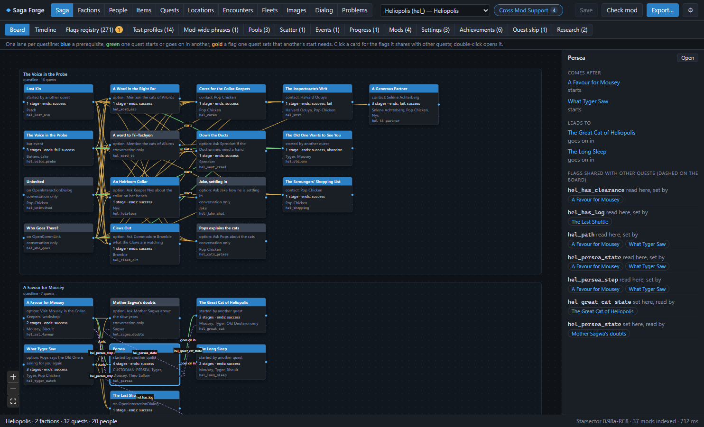
Persea selected: the quests before and after it, and the flags it sharesThe lanes come from the quests themselves, so the cards can't be dragged. Prerequisites are set in the quest (see Make one quest wait for another), flags by the nodes that set and read them.
Timeline
The quests in the order a player can reach them: first those available from the start, then those that open after 1 step (one prerequisite done), after 2 steps, and so on. Click a quest to open it. If prerequisites go round in a circle (A needs B, B needs A), the quests in it are listed in red: they can never start.
Flags
Flags registry lists every memory key the mod uses: the ones its quests, nodes, events and progress bars set and read, plus keys in rows you wrote into rules.csv by hand. Keys that vanilla or another mod sets are marked with where they come from, and keys Saga Forge makes up itself (an option that is shown once, for example) carry a generated badge.
| Column | What it shows |
|---|---|
| Key | The memory key, e.g. $global.hel_persea_state |
| Set by / Read by | Where it is set and where it is checked: quest and node. Click one to open that node |
| Type | What kind of value it holds: bool, number or string |
| Status | ok; set, never read (grey, often fine: a stage a later quest might use); read, never set (orange: usually a typo); mixed types (orange: set to a number in one place and text in another) |
Type in Filter keys… to find one. Nothing here is written into the mod.

Test profiles
A test profile is a saved game situation: where each quest stands (not started, active at a stage, succeeded or failed), flags with their values, and the player's credits, story points, commission, reputation, cargo and the place their fleet starts at.
Profiles are used in two places:
- In Saga Forge's Play mode, to try a quest from the middle (see Quests › Test a quest in Play mode).
- In the game, with dev mode on: SagaLib offers them at a new game and in its dev menu (Ctrl+F9), and applies the one you pick to the running game. See Start the game with a test profile.
The export writes them to data/sagaforge/dev/test_profiles.json. SagaLib only reads that file in dev mode, and release zips leave it out, so players never see your profiles.
Phrases
A phrase is a token like $toc_he that you type into any text of the mod. In game, SagaLib fills in a text for it each time:
- first case that matches: each case has "if" lines (conditions as in
rules.csv); the first case whose lines are all true gives the text, else the otherwise text. - random: one of the texts at random (the cases and the or line).
Mod-wide phrases are the ones any text of the mod can use. The Other Captain has a set of them for John Starsector, who is Jane for a female player (a version by the player's gender, see Versions by the player's gender): $toc_he says "he" or "she", $toc_his "his" or "her", and so on, so one text fits both. A character's own phrases (how Tyger addresses you, say) are on the People tab (see People › Give a character phrases), and one-off variations go inside a Dialog node. The export writes the mod-wide phrases into data/sagaforge/people/<mod id>_people.json.
Pools
A pool is a named list of things that can happen, each with a weight, like a loot table or a deck of story cards: one entry is picked by weight (5 against 1 is five times as likely), or nothing. The percentage next to each entry is its chance when every entry may be picked. Used for says what kind of pool it is:
| Used for | What it does | Written to |
|---|---|---|
| Random branches (story picks) | A quest's Random branch rolls it, so several conversations can share one list with the same limits | data/sagaforge/pools/<id>.json (SagaLib 1.2) |
| a loot table (drop group) | A drop group, as vanilla's salvage uses: caches, wrecks, scatter and quest rewards roll it | rows in data/campaign/procgen/drop_groups.csv (vanilla's file, no SagaLib) |
| random encounters | Fleets that may lie in wait at vanilla's encounter points in hyperspace | data/sagaforge/pools/<id>.json (SagaLib 1.2) |
Story picks have limits per entry: once per playthrough, once per place or person, a cooldown in days, or at most a number of times, and optional conditions ("may be picked only if…"). At the bottom, Used by lists the branches, places and scatters that roll the pool; a pool that is in use can't change its kind or be deleted.
Heliopolis has one of each: Who is in the pod (story picks: which cat sleeps in each cryo-probe of the quest Lost Kin), Cryo-probe salvage loot (what the scattered probes give) and Cats in the dark (random encounters: the Midnight Zoomies, a friendly smuggler convoy).
Scatter
Copies of one object (a supply cache, a probe, a research station…) that SagaLib places at the start of a new game, each in a different star system, the way vanilla scatters its derelicts and caches. Saga Forge doesn't pick the places: you describe them (Where: an uninhabited planet, not in a dangerous system, preferably one nobody has explored, say), and in game vanilla's own mission search picks them. Each copy can have salvage loot and a fleet guarding it.
It happens once per game (with Existing saves ticked, also once in a game started before the mod was added, on its next load). The export writes data/sagaforge/scatter/<id>.json; in game the objects are named <id>_1, <id>_2 …, and $global.sagaforge_scatter_<id>_done holds how many were placed.
Events
World events are things that happen in the sector without the player starting them, like vanilla's bounties and hostilities. An event scheduler keeps between a least and a most of its events running, and every few days picks a new one by weight (with conditions, once, cooldown and "at most" limits as in a pool). Each event:
- runs for some days, and
$global.<event id>_activeis true meanwhile (use it in conditions and dialog); - can post a news item in the intel screen (title, text, the intel tab, a place on the map);
- runs actions when it starts and when it ends (set a flag, give credits, spawn or remove an encounter's fleet, start a quest, add progress…).
The schedulers themselves are never shown in game. The export writes data/sagaforge/events/<id>.json, with the start and end actions in it: SagaLib (1.4) runs them itself, without opening a dialog, and what they give shows as campaign messages ("Gained …"). Only an action that needs a dialog (a raw rules line, "the person you're talking to") stays a rule in data/campaign/rules.csv (on the triggers SF_event_<event id>_start and _end), which SagaLib fires in a dialog of its own. In Heliopolis, The Persea Fever runs at most one of three events (an outbreak, a quarantine, a strange sighting) every 40 days or so, once the player has helped the Rat.
Progress
A progress event is a bar in the intel screen (under Major events), like vanilla's colony crises and Hyperspace Topography. It fills up from:
- monthly factors: points every month while their conditions hold (negative points lower it);
- one-time points: an "Add progress" action in a quest, a dialog or a world event (listed in the event with its text).
Each stage sits at a value on the bar. When the bar reaches it, the game shows an update with the stage's title and its actions run, or, with Outcomes, one outcome is picked by weight and only its actions run. After the last stage the event ends, or starts over from a lower value. A event can have up to 20 stages.
The export writes data/sagaforge/progress/<id>.json with the stage actions in it (SagaLib 1.4 runs them without a dialog, as for world events; a raw rules line stays a rule in data/campaign/rules.csv); $global.<event id>_stage holds the last stage reached.
The two example mods have one each. Heliopolis's Hegemony suspicion grows while the player deals with the cats and ends in a writ of purge. The Other Captain's Hegemony Warrant is the story's crisis bar: it fills over time, faster when the player fights the Hegemony, drains with evidence brought to the tax office, and its stages send a patrol, then bounty hunters, then a Hegemony manhunt. The fleets it sends set the "fought the Hegemony" flag when beaten, through the encounters' own outcomes (see Encounters).
 Progress: The Other Captain's Hegemony Warrant, with its factors and stages
Progress: The Other Captain's Hegemony Warrant, with its factors and stages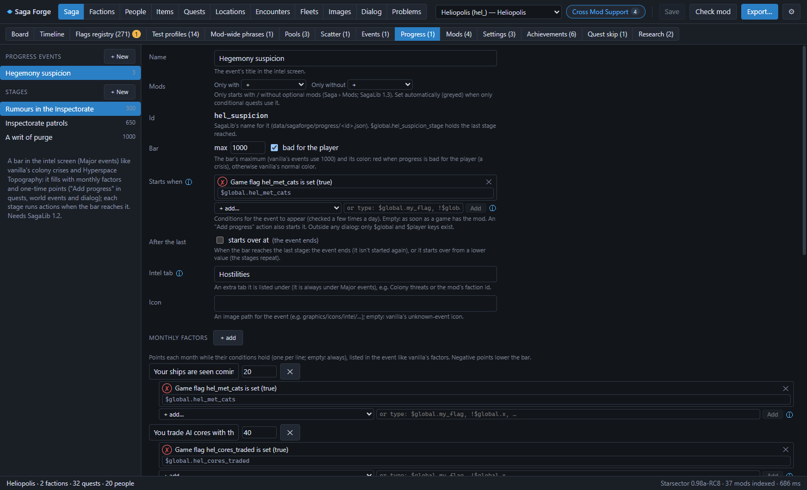
Progress: Heliopolis's Hegemony suspicionMods
Mods is the list of other mods your mod has content for, and how it uses each one. The game itself only knows "required" (a dependency in mod_info.json), so Saga Forge keeps the rest the way installed mods do it: data only that mod reads, plus checks in game. The table offers every installed mod, enabled or not, except your own mod, SagaLib, translation mods and the libraries the listed mods need (Show libraries lists those). Its columns:
| Column | What it shows |
|---|---|
| Mod | name, id and version; "off in your game" when it isn't enabled in your launcher (you can still write for it) |
| Use | Required, Optional, Incompatible or Not used |
| Min version | the lowest version of that mod yours needs (a required mod's dependency gets it) |
| Never with | mods no player runs together with this one (+ never with…). Some pairs are built in and shown greyed as known: AoTD's Theory of Toolbox and the modules that need it (Vaults of Knowledge, Seats of Power) never run with Industrial.Evolution |
| Used by | what in your mod refers to it: a character of its faction, a relation, a market of it, a patch of its faction, its framework files |
| Unlocks | what appears in your mod when it is listed: its content in lists and pickers, "Only with / Only without" conditions and a Play mode switch for optional mods, and tools made for that mod |
| Reason | for an incompatible mod: why (players see it) |
What each choice does:
- Required: the export asks to add it to
mod_info.jsondependencies, so the launcher won't enable your mod without it. Your content may use it freely. - Optional: never added to the dependencies. Your mod must load and play without it, so everything that uses it is conditional (Only with / Only without, below). Play mode and the Test context get a switch for it. The release notes list it under "Works with".
- Incompatible: the game can't stop players from enabling both. SagaLib writes a warning in the log on every load and tells the player once per game, with your reason. Referring to its content is an error. The release notes list it under "Known conflicts".
- Not used: nothing. If your content refers to it anyway, Problems says so, with Add as required and Add as optional.
Never with only changes the editor: the versions strip gets no cell for such a pair, the combination checks skip it, and Play mode's and the Test context's switches turn the other mod off when you turn one on. "Only with A and B" for such a pair, or a version for it, is a warning. The export and the game are not affected.
The editor follows the list. For a game with your mod, what exists is vanilla, your mod and the mods it lists here, so that is what Saga Forge shows, offers and checks:
- Pickers (factions, people, items, ships, conditions, industries, submarkets, hullmods, drop groups, research, quests …) list only those mods' entries. Show all installed mods (on the lists) or the +N button (in a picker) shows the rest, and picking one of them offers Add as optional or Add as required right there.
- Values that several installed mods change (a market's owner, a replaced CSV row, a planet type, a faction's name, colour, logo or crest) show as those mods leave them, not as the last installed mod does. Your own planet and star types start from that value too.
- Locations lists the existing star systems as read-only, like People's existing characters; the map, the markets and the type chooser follow the list.
- Play mode and the dialog preview run only those mods' rules, and images, fonts and dialog colours come from them.
- Problems warns when your mod uses a condition, industry, submarket, hullmod or drop group of an installed mod that isn't listed, as it does for factions and items.
Only with / Only without. Every quest, conversation, character, star system and object, encounter, world event, event scheduler, progress event, pool, scatter, starting relation and scripted faction change, and every dialog option, Branch case and phrase case, has a Mods field: Only with these mods and Only without these mods (only the optional mods are offered). Everything listed must hold; any of makes the "with" list "at least one of them". The setting shows as a chip ("only with Hazard Mining Incorporated") on the item and in lists.
Some conditions are set for you and show greyed, with where they come from:
- an item that refers to an optional mod's content (a character of its faction, a relation with its faction, an object orbiting its planet) gets "Only with" that mod (uses …);
- a quest that needs a conditional quest, and a quest whose contact is conditional, get its condition (from: …);
- characters, places, encounters and progress events that only conditional content uses get the conditions all their users share. Things also used by content without conditions keep none; Problems says which.
How it is exported: SagaLib content gets modsWith / modsWithout (SagaLib skips it otherwise and writes one line to the log); dialog gets the rule conditions SF_HasMod / !SF_HasMod (any of: SF_HasAnyMod), and an option with conditions becomes a small rule of its own. The export also writes data/sagaforge/mods.json for SagaLib, and the mod then needs SagaLib 1.3.
A save keeps the mods it started with. The first time SagaLib sees your mod in a save, it records which of its optional and incompatible mods are enabled. Every condition uses that record: a mod counts only if it was enabled when the game started and still is. A mod added to a running game changes nothing (and the player is told once); a removed small mod (a utility, a few rules) stops what depends on it. A mod with its own factions, items or markets usually can't be removed from a save at all: the game itself refuses to load it. So players should add or remove optional mods only before a new game; the release notes say so.
Some things can't be conditional, because the game loads them every time: a new faction's known ships, weapons or portraits from an optional mod, an item using its icon. Problems marks them as errors: make the mod required, or leave them out. Dialog can't use an optional mod's own rule commands either (the game stops loading without them); Check mod finds those too.
Versions by installed mods. "Only with / Only without" makes an item exist or not. A version keeps one item (one id) and changes some of its fields when optional mods are installed: a character who lives at another mod's market when that mod is there, a different last name and portrait with a second mod, and swapped dialog when both are there. With optional mods in the list, these editors get a Versions strip at the top: characters, quests and conversations (their settings, places, texts, rewards, time limits and every node), encounters, your own star systems and their markets, event schedulers, pools, starting relations and scripted faction changes, items (name, description, icon and base price) and descriptions.
The strip is one row: Base (the item without any optional mod), a button for each version that sets something (its short name and how many fields it sets), and a menu, Mod versions ▾ (Versions ▾ when settings or the player's gender can have versions too), that lists every version: With one mod, With a setting or the player and Combinations (two mods: Mod1, Mod2 and Mod1 + Mod2), each with "n fields set" or "inherits", and ! where two versions disagree. Mods marked Never with each other get no combination.
- Pick a version to see the item as it will be in that combination. A field you change there is stored for that version only; every other field is inherited, field by field: the most specific version wins (Mod1 + Mod2, then Mod1 or Mod2, then Base). Under the strip, the open version lists its own fields, each with Revert (it inherits again).
- If Mod1 and Mod2 change the same field differently, the combination asks which value to use (or change the field there). Problems shows it as an error until you decide.
- In game, SagaLib picks each item's version once per save, from the mods the game started with, and keeps it: adding or removing a mod later never switches a character mid-story. Items and descriptions are the exception: the game loads them before any save, so they follow the mods installed now.
- A quest's place that several parts use (its start, stage markers, Arrive nodes, pictures) can be a named place (the quest's Places list): use "named place …" in the pickers, or
place:<id>in a condition ($id == place:home). Change it once, also in a version. - Write a character's name in dialog with their name tokens,
$<id>_name,$<id>_firstNameand$<id>_lastName, so each version's name shows. Problems warns when a text spells out a name that differs between versions. - On export, SagaLib's files get a
versionslist, and each dialog node a version changes gets one more rule that tests the version picked for the save. The mod then needs SagaLib 1.3. - Play mode and the Test context show the version of the optional mods' switches.
Versions by a setting. An on/off or choice setting of your Settings page marked Versions may depend on it adds its values to the menu (With a setting or the player: one entry per value, and each value with each optional mod under Combinations). SagaLib records the setting's value when a game starts and keeps that version for the save: changing the setting later in LunaLib's menu doesn't change it. Play mode plays the version of the Test context's values. Problems warns about a version for a setting that is missing, isn't marked, or takes no such value. Items and descriptions can't have versions by a setting (the game loads them before any save).
Versions by the player's gender
The menu also offers Player = male and Player = female, alone and with each optional mod. Base is for any player; a version for one gender changes what you set for that player only. In The Other Captain, John Starsector is Jane for a female player: her version sets the first name, the gender and the portrait. SagaLib records the player's gender when the game starts, and the version never changes after. Play mode and the dialog preview use the Test context's Player is. Items and descriptions can't have such versions (the game loads them before any save), and a picture in a dialog can show another picture for a female player without a version (see Images).
Some things can't have versions, because the game loads them at startup with no way to change them later: a faction or item that exists only with a mod, a faction's main color, ranks and music, items' tags, stack size and cargo space. Other mods' own characters and factions stay read-only; dialog around them can have versions.
Other mods' content. To offer another mod's market or character, Saga Forge has to know them:
- Mods made with Saga Forge: their star systems, markets, places, characters, quests, encounters and pools are read from their files (the ones their
content.csvlists). Their quests can be prerequisites (after Mod1's quest X, in a quest's Prerequisites), which makes the quest "Only with" that mod by itself. Their dialog shows with its real texts. - Mods that build their sector in Java code: their systems, markets and people aren't in any file Saga Forge reads, so their ids show as "not checked". Take a sector snapshot: start a game with the mod (dev mode on), open SagaLib's dev menu (Ctrl+F9) and pick Write sector snapshot; then in Saga › Mods, under Seen in game, click Import from the game. What the snapshot saw becomes pickable and checked, tied to the mod it belongs to (by its faction or its id prefix). Things it can't tie to a mod, such as vanilla's random systems, are left out.
Settings
Settings is your mod's own page in LunaLib's settings menu: options the player changes, such as "Enable the pirate questline" or a difficulty. Many installed mods ship such a page without needing LunaLib; players without it simply get the defaults. The list on the left is the page from top to bottom (▲ ▼ move a row); + Add… adds a row after the selected one. Each row has:
| Field | What it is |
|---|---|
| Type | On/off, Whole number or Number (a slider), Choice (a few words, such as Easy, Normal, Hard), Text value, or, for layout only, a Header or a Text line |
| Label | what the player sees (a Header's heading, a Text line's text) |
| Id | starts with your prefix and follows the label until something uses it; the value is in memory as $global.<id>. Don't change it after a release: LunaLib keeps the player's values by id |
| Description | printed by LunaLib under the label |
| Choices | for a Choice: the words, separated by commas |
| Default | the value until the player changes it, and always without LunaLib |
| Range | for numbers: the slider's minimum and maximum |
| Tab | a tab of your page (empty: the main tab) |
| Versions | for on/off and choice settings: Versions may depend on it, so quests, people, systems, encounters, pools and events can have a version per value (see Versions by a setting). Its value is then fixed when a game starts |
The panel also shows whether LunaLib is optional (the default: it is never added to mod_info.json) or required (list it as Required in Mods), the mod's icon in LunaLib's menu (Choose…; square, 40×40 shows unscaled), what reads each setting (Read by), and a rough preview of the page.
How it works in game: the export writes data/config/LunaSettings.csv (and data/config/LunaSettingsConfig.json for the icon). LunaLib reads it and shows the page. SagaLib reads the same file itself, so it needs no LunaLib, and sets every value as $global.<id> each time a game loads: the player's value when LunaLib is there, the default when it isn't. When the player changes a setting in LunaLib's menu during a game, SagaLib applies it at once.
Settings are shared by every save. LunaLib keeps the player's values outside the saves (saves/common), so a change counts for every playthrough. Quests read a setting when they decide (when a quest is offered, at a Branch), so changing one doesn't break a quest that is already running.
Where you can use a setting:
- Conditions everywhere: the condition pickers of Branch cases, phrases, option conditions and start conditions list each setting ("Setting Difficulty is Hard", "Setting Enable the courier job is on").
- A switch for a quest and the quests after it: a quest's Prerequisites › A setting (see Switch a questline on or off).
- Multipliers: a reward's credits (Scaled by, in the quest's Rewards) and an encounter's fleet points (Size scaled by). A whole-number setting is a percent (100 = as made), a number is times (1 = as made), and an on/off or a choice gets a factor for each value.
- In text,
$global.<id>shows the value, but the game prints a whole number with a decimal ("100.0"), so Problems warns. Say it in words, or use a Branch or phrase on the value.
The flags registry marks each setting's key with a green setting badge. Play mode's toolbar and the Test context have a control for each setting. A mod that reads its settings needs SagaLib 1.3.
Achievements
Achievements are your mod's entries in MagicLib's achievement list (Intel › Achievements): a reward for reaching a quest's ending. The tab is there once the mod lists MagicLib in Mods (optional is enough). The list on the left has your achievements (+ Add); each one has:
| Field | What it is |
|---|---|
| Name | shown in the list and in MagicLib's notice when unlocked |
| Id | starts with your prefix and follows the name until a quest unlocks it. MagicLib keeps every mod's achievements in one list by id; never change it after a release (players lose what they unlocked) |
| Description | under the name; MagicLib asks for the past tense, "Named a cat Jake instead of telling him what his collar said." |
| Tooltip | optional, a longer text on hover |
| Shown | visible, listed, details hidden (a spoiler: for endings players reach anyway) or hidden until unlocked (for rare endings) |
| Rarity | common to legendary: the frame and the default image |
| Image | shown once unlocked (48×48); empty uses MagicLib's image for the rarity |
Unlocked by lists the quests that unlock it. A quest unlocks one at an End node (its Achievement field) or anywhere with the action Unlock a MagicLib achievement (see Quests).
How it works in game: the export writes data/config/magic_achievements.csv, which MagicLib reads, and lists the images in the mod's data/config/settings.json so the game loads them. When a quest reaches the ending, SagaLib unlocks the achievement through MagicLib, and MagicLib's notice shows in the dialog. Without MagicLib your mod loads and nothing happens. Achievements are kept outside the saves (saves/common): one unlocked stays unlocked in every playthrough. Needs SagaLib 1.3.
Quest skip
Quest skip puts your questlines on Nexerelin's new-game Skip story screen ("Set completed quests"), where a player who already played a story can start after it. The tab is there once the mod lists Nexerelin in Mods. On the left are your quest chains (+ Add): a chain is one row on that screen, usually one questline, with a Name, an Image (Nexerelin needs one; a mission icon fits), a Sort key (Nexerelin's own rows start with AAAA_, so a key from B on puts yours after them) and a Tooltip.
Under the chain are its quests, one button each, in the order they are played. + Add a quest… also adds the quests it needs first. Click a button to set that quest:
| Field | What it is |
|---|---|
| On the button | a short name (Nexerelin's buttons fit about 18 characters); empty uses the quest's title |
| Tooltip | what the player is taken to have done ("The player met the cats and brought them their cores.") |
| A skip means | the ending the player is taken to have reached: one of the quest's End nodes, or a Stage node of a success or fail stage |
| Rewards | give the rewards on the way to that ending when the game starts (on by default) |
Below, the panel shows what that ending leaves in memory, worked out along the shortest path from the Start node: the quest's state and last stage, the game's "completed" key, its variables and every Set on the way. Untick a key to leave it out; More keys adds keys the path doesn't set ($global. or $player.). What a skip gives lists the rewards; People to show puts people in their market's comm directory; What a skip doesn't do lists what is left out (another quest started, an encounter, an achievement, keys only the dialog has). Checking a button on Nexerelin's screen also checks the quests of the chain it needs, and unchecking it unchecks the ones that need it; Saga Forge works that out from the prerequisites.
How it works in game: the export writes data/config/exerelin/questSkip.json, which only Nexerelin reads. Each chain names SagaLib's plugin: Nexerelin sets a skip's keys only through one, and the plugin also gives the rewards at the start. Later quests then see the skipped quest as finished, the same as if it was played (their prerequisites hold, its offer is gone). Without Nexerelin the file does nothing. Needs SagaLib 1.3.
Research
Research is your mod's own techs for AoTD Vaults of Knowledge (VoK). VoK's research screen shows them as a tree of their own, named after your mod. The tab is there once the mod lists Vaults of Knowledge in Mods (optional is enough). The list on the left has your techs by tier (+ Add); each one has:
| Field | What it is |
|---|---|
| Name and Id | the id starts with your prefix and follows the name until a quest names it. VoK keeps a save's research by id; never change it after a release |
| Tier and Days | VoK's tier (0 to 5, 5 is experimental) and the days to research it |
| Place and Tree | the column and row in that tier of your tree; click a free cell of the grid to move it there |
| Icon | an image of your mod (Choose image…), or the id of an icon there already, such as VoK's basic or farming1. VoK needs one |
| Needs first | techs researched before it: VoK's own, another mod's or your own |
| Costs | paid when research starts: research databanks (VoK's research_databank) or other items |
| Unlocks | industries, ships, weapons, hullmods, abilities, or a modifier (only a line of text; its effect would need Java) |
| From the start | already researched in a new game |
| By a quest | it can only be researched after a quest's Unlock research; the text is what VoK shows until then |
Written by hand lists rows of your aotd_tech_options.csv that Saga Forge didn't write. They stay as they are; Edit in Saga Forge takes one over (the next export moves it into Saga Forge's part of the file).
Quests use research with three steps (see Quests): the action Unlock research (for a tech "unlocked by a quest"), the action Grant research or an End node's Research (the player's faction gets a tech as researched at once, VoK's own techs too), and the condition Has researched (SF_HasResearch <tech> [faction]).
How it works in game: the export writes data/campaign/aotd_tech_options.csv and lists your icons in the mod's data/config/settings.json; only VoK reads them. Unlocking is a flag VoK checks, so it works without SagaLib. Granting and "has researched" go through SagaLib 1.4; without VoK, granting does nothing and "has researched" is false, so your mod still plays. Your factions' attitude to research is on their Research tab.
How to set up the basics
Arrange quests on the board
The board arranges itself: you don't place the cards. A quest joins a lane when something links it to another quest of that lane, and moves right with each step it has to wait for.
- Open Saga › Board. Find the quest; if it sits in the last lane, nothing links it yet.
- Link it the way the story does: a prerequisite (see the next recipe), an Action that starts it (Start another quest, see Quests › Start a quest from a dialog option), or a flag its start needs that another quest sets.
- Back on the board it is in that quest's lane, after it. Click it to check what it comes after, what it leads to, and the flags it shares.
Make one quest wait for another
- Open the later quest on the Quests tab (in Heliopolis: Cores for the Collar-Keepers) and click an empty spot of the chart, so its settings show on the right.
- Under Prerequisites, pick + add… and "The Voice in the Probe" ended (with succeeded, failed or just ended), or a flag is set and the memory key (here
$global.hel_met_cats, which the probe quest sets when the player meets the cats). - Back on Saga › Board the two cards are joined (blue for a quest, gold for a flag) in one lane, and on Timeline the later quest moves one step down.
All prerequisites must be true before the quest is offered or starts. In game, Pop Chicken doesn't offer the cores job until the player has met the cats.
Find where a flag is used
- Open Saga › Flags registry.
- Type part of the key in Filter keys…, e.g.
pay. - Read Set by and Read by; click an entry to open that quest with the node selected.
- If the status says read, never set, the key is probably misspelt somewhere. When Saga Forge finds a similar key that is set, it offers Use
<that key>: click it to rename the misspelt key everywhere in the mod.
Add a test profile
- Open Saga › Test profiles and press + New.
- Give it a Name that says what situation it is ("The Rat chain, off to Persea"). The id follows the name.
- Under Quests, set each quest that matters: active with the stage it should be at, succeeded or failed. Quests you leave at not started are left alone.
- Under Flags, add any memory keys the situation needs (pick or type the key, press + flag, then type the value).
- Under Player, fill in only what should change: credits, story points, a commission, reputation (from -1 to 1), cargo, and Start at, the id of a place (e.g.
hel_felicette). Empty fields leave the game as it is. - Save.
To try the profile in the editor, pick it in Play mode (see Quests › Test a quest in Play mode). For the game, see the next recipe.
Start the game with a test profile
- Export the mod (see Export and Release › Export the mod); the profiles go into
data/sagaforge/dev/test_profiles.json. - Turn on the game's dev mode: set
"devMode": trueinstarsector-core/data/config/settings.jsonof your Starsector install. - Enable your mod and SagaLib, and start the game.
- At a new game, after the sector is made, SagaLib shows a list of your profiles (and "none"); pick one.
- In a running game, press Ctrl+F9 for SagaLib's dev menu: it can apply a profile, jump a quest to a step, and reload the mod's quests, people, phrases and profiles after you export again. Applying a profile changes the running save, so use a throwaway one.
The profile sets the quests, flags, credits, story points, commission, reputation and cargo, and moves your fleet to Start at (from the dev menu this needs SagaLib 1.2).
Add a phrase
- Open Saga › Mod-wide phrases and press + Phrase.
- Name the token in the first field. It always starts with
$and the mod's prefix ($toc_he); Saga Forge adds them if you leave them out. - Pick random for a different text each time, or first case that matches for texts that depend on the situation.
- Type the texts. For first case that matches, give each case its if lines (one condition per line; the + add… list under the box offers common ones), and fill in otherwise.
- Type the token into any dialog text of the mod:
"Nobody knows where $toc_he went."
In game, SagaLib swaps the token for one of its texts each time the line is shown. A phrase text can itself contain tokens such as $playerName.
Make a random pool
A pool for story picks, shared by several conversations: what a survey team finds on a planet, which rumour a barkeeper tells.
- Open Saga › Pools and press + New. Give it a Name ("Who is in the pod"); until a branch uses the pool, its id follows the name.
- Leave Used for at Random branches (story picks).
- Set Nothing: the weight of "nothing happens" (0 means an entry is always picked).
- Press + Entry for each possible result: a label, a weight, and if needed a limit (once per playthrough, once per place or person, a cooldown, at most N times) and conditions.
- In a quest, add a Branch node, set Picks to at random (by weight) and choose the pool (see Quests › Add a random branch). Its cases become the pool's entries plus otherwise for nothing.

Rolled for on the branch decides whose luck it is: the place or person in the dialog (the same rock gives the same results after a reload, and "once per place" counts per rock) or the world. To test a pick in game, give a test profile the flag $global.sagaforge_pool_<pool id>_force with an entry's id as the value (dev mode): the next roll of that pool picks it.
Make a loot table
A drop group of the mod's own, for what salvagers find in a cache or wreck.
- Open Saga › Pools, press + New and name it ("Cryo-probe salvage loot").
- Set Used for to a loot table (drop group). Leave Adds to empty.
- Press + Entry for each thing it can drop, and pick or type its id: a commodity (
supplies,fuel), a special item (item_<id>), a weapon (wpn_<id>) or a fighter wing (ftr_<id>). Give each a weight. - Set Nothing: the weight of a roll that drops nothing.
- Let something roll it:
- a cache or wreck in a system (see Locations › Add a cache with loot and defenders),
- the copies of a scatter (see Scatter objects across the sector),
- a quest reward (see Quests › Give a reward).
The export writes the table into the mod's data/campaign/procgen/drop_groups.csv (between # sagaforge:begin loot and # sagaforge:end loot lines; rows you add outside them are kept). Its group id is the pool's id. In game, when the player salvages, vanilla rolls the group as many times as the place says.
Add to a vanilla drop group
To make vanilla's own salvage drop your items too (an alpha core more often, your mod's special item in the rare tech finds):
- Make a loot table as in Make a loot table, steps 1 to 3.
- In Adds to (the field under Used for, empty in the loot table picture there), pick the existing group: vanilla's
rare_tech,blueprints,ai_cores2… or another mod's. - The entries are added to that group; its own entries stay, and so do other mods' additions.
Then the pool is no longer a group of its own: places and rewards roll the group you add to, so your entries turn up wherever vanilla rolls it.
If vanilla or another installed mod already adds the same item to that group, Problems warns: the two rows don't add up, only one weight counts (which one depends on the load order). The same goes for rows you wrote by hand in the mod's drop_groups.csv. Use another item, or a group of your own.
Add random encounters
Fleets that may lie in wait at vanilla's encounter points: in slipstreams in hyperspace, and just outside star systems.
- Make the fleets first, as encounters on the Encounters tab (see Encounters). Their own spawn settings don't matter here.
- Open Saga › Pools, press + New, name it ("Cats in the dark") and set Used for to random encounters.
- Tick Where: in slipstreams, outside star systems, or both.
- Set Frequency: how often your pool is chosen against vanilla's own encounter makers (pirates, scavengers…), which use about 10. 3 makes yours about a third as common as one of theirs.
- Press + Entry and pick an encounter for each entry, with a weight, and limits or conditions if needed.
In game (SagaLib 1.2), when vanilla picks your pool at an encounter point, one entry's fleet waits near it and leaves after the player is gone. Its comm dialog works as usual.
Scatter objects across the sector
- Open Saga › Scatter and press + New. It starts as three "Hidden caches" on uncolonised, unexplored planets.
- Set the Name, How many copies, the Object (a custom entity type:
supply_cache,weapons_cache,derelict_probe,station_research… or one of the mod's own types) and Its name on the map. - Under Where, choose what to Pick (a planet, an entity, a star system or a market) and the criteria it Must meet (+ add a criterion…), and under Prefer those it should rather meet, tried in order. + Avoid dangerous systems keeps it out of systems with dangerous fleets or active Remnants.
- If a criterion measures distance ("within N light-years"), set Measured from to a place (e.g.
hel_felicette); empty means from the player's fleet at the start. - Add Loot (+ Loot, a drop group and how many rolls; see Make a loot table) and Defenders (faction and strength) if you want them.
- Tick Existing saves if games started before your mod should get them too.
In game (SagaLib 1.2), each copy orbits a different pick, in a different system. If fewer places fit, fewer copies are placed.
Add a world event
- Open Saga › Events and press + New next to Event schedulers. Give it a name (only for you) and set Running (at least / at most at the same time), Check every (days) and First check (days after the game starts, so a new game settles first).
- Press + New next to Events. Set its Name, Weight, Runs for (days), and if needed How often (once, a cooldown, at most N times) and Conditions.
- Keep post a news item ticked and write its Title and Text. Choose the Intel tab it is listed under, a place On the map, and how many days it is Shown for.
- Under When it starts, use + add… for what happens: set a flag, give credits, Spawn an encounter (its fleet appears at its own place; see Encounters) …
- Under When it ends, undo what needs undoing, e.g. Despawn an encounter.
- To see it in game without waiting, give a test profile the flag shown in the scheduler's Test line (
$global.sagaforge_ev_<scheduler id>_force) with the event's id as the value. Play mode can't run world events: they are tested in game.
In game (SagaLib 1.2), the news item shows in the intel screen under its tab and points at its place on the map; its actions run in the background (with SagaLib 1.4 without a dialog, and what they give shows as campaign messages).
Add a progress event
- Open Saga › Progress and press + New. The Name is the bar's title in the intel screen.
- Set the Bar: its maximum (vanilla's use 1000), and tick bad for the player for a red, crisis-style bar.
- Starts when: conditions for the bar to appear, one per line; empty means as soon as a game has the mod.
- After the last: tick starts over at and a value for a bar that repeats, or leave it unticked to end the event after its last stage.
- Under Monthly factors, press + add for each steady push: a text, points per month, and conditions (empty: always).
- Press + New next to Stages for each stage. Give it a Title, the value it is reached At, a Text (its tooltip), and what happens: actions under When reached, or tick picks one outcome at random and give each outcome a weight and its actions.
- To push the bar from a story, add an Add progress action with points and a text to a quest (see Quests › Change progress from a dialog) or to a world event.
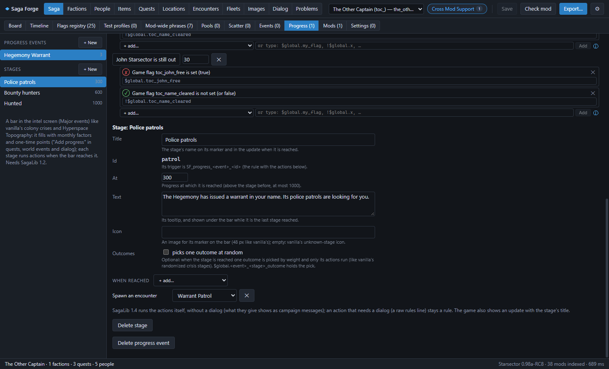
The Hegemony Warrant's Police patrols stage spawns the Warrant Patrol An Action node of The Other Captain adds to the Hegemony Warrant when the player chases John
An Action node of The Other Captain adds to the Hegemony Warrant when the player chases JohnIn game (SagaLib 1.2), the bar appears in the intel screen under Major events (and the extra Intel tab, if you set one), with a marker per stage and the factors listed under it.
Work with another mod
- Click the Cross Mod Support pill in the header (or open Saga › Mods).
- Find the mod (type in Filter mods…) and set its Use:
- Optional when your mod should also run without it (most mods, and frameworks used only through their own files, such as a LunaLib settings page);
- Required when your story can't do without it; set a Min version if you need one;
- Incompatible when the two shouldn't run together; write the Reason players will see.
- If no player runs it together with another mod, pick that one under Never with.
- Save. Lists and pickers now also show that mod's factions, characters, places, ships and images, and the pill counts it.
- When you export, tick Add the required mods to mod_info.json dependencies if it is listed.
If you pick something from a mod that isn't in the list (with a list's Show all installed mods switch, or the +N button in a picker), Saga Forge asks right there: Add as optional or Add as required. Removing a mod that your content uses, or marking it incompatible, asks first and lists what uses it.
Make content only with or without a mod
- Make the mod Optional (see Work with another mod).
- Open the item and find its Mods field: a quest's settings, a character's or an object's form, an encounter, an event; for a dialog option, its ⋯ settings; for a Branch case or a phrase case, the line above its conditions.
- Pick the mod under Only with (or Only without). For a scene in two versions, give one option Only with and the other Only without the same mod.
- Test both: in Play mode, the toolbar has a switch per optional mod (see Quests › Test a quest in Play mode). Problems reports a node that would be left without options, or a Branch without a case, in any combination of the optional mods.
For a whole questline, set it once on the first quest: the quests that need it and what only they use follow, greyed. A new faction that only matters with the mod can't be left out (the game always loads it), so on its Relations tab set Hidden from the intel tab to Only without that mod.
Give a character a version for another mod
- Make the other mod Optional (see Work with another mod). If it builds its sector in Java code, import a sector snapshot first (see "Other mods' content" above), so its markets can be picked.
- Open the character on the People tab. In the Versions strip, open Mod versions ▾ and pick that mod.
- Change what differs with it, for example Market (pick the other mod's market). Only that field is stored for the version; the cell lists it, with Revert.
- With two optional mods, pick the combination in the menu to check what it inherits, and change what only that combination needs (for example a node's text in the conversation's own strip on the Quests tab). If it says two versions disagree, pick one value there.
- In Play mode, switch the optional mods in the toolbar to see each version.
In game, the character's version is picked once, when a game starts, from the mods installed then.
Give a character a version for a female player
- Open the character on the People tab (in The Other Captain: John Starsector).
- In the Versions strip, open Versions ▾ and pick Player = female.
- Change what differs: First name (Jane), Gender and Portrait. Each field is stored for that version only; the button Player = female now shows how many fields it sets.
- Write the person's name in dialog with their name tokens (
$toc_starsector_name) and use phrases for "he" and "she" (see Add a phrase), so one text fits both. - In Play mode, set the Test context's Player is to female and play the quest.
In game, SagaLib records the player's gender when the game starts; the version never changes after.
Add a settings page
- Open Saga › Settings and pick + Add… › Header (layout). Type the heading, for example your mod's name.
- Add the options: + Add… › On/off, Choice or Whole number. Give each a Label, a Description and a Default; for a choice, type the Choices ("Easy, Normal, Hard").
- Optional: Choose… an icon for LunaLib's menu.
- Use the settings (the next two recipes), then export.
In game with LunaLib, the page is in LunaLib's settings menu under your mod's name. Without LunaLib your mod loads as usual and the defaults apply.
Switch a questline on or off
- Add an On/off setting, for example "Enable the pirate questline", default on (see Add a settings page).
- Open the first quest of the line on the Quests tab. Under Prerequisites, pick + add… › "Enable the pirate questline" is on.
- The quests that need this one won't start either while it's off. For a single option in a conversation, put the line from the condition picker (Setting … is on) in the option's conditions instead.
- Test it: in Play mode, untick the setting in the toolbar and press Restart.
In game, turning it off in LunaLib's menu takes the quest's offer away at once; a quest already running goes on.
Add an achievement for a quest ending
- List MagicLib in Saga › Mods as optional (or Add as optional in Problems).
- Open Saga › Achievements, click + Add, and give it a Name and a Description in the past tense. Pick Shown and Rarity; optional: Choose… an image.
- Open the quest on the Quests tab, select its success End node, and pick the achievement in Achievement. (Elsewhere in a quest: an Action with Unlock a MagicLib achievement.)
- Test it in Play mode: reaching the end shows "(MagicLib) Achievement unlocked: …".
Let players skip your quests (Nexerelin)
- List Nexerelin in Saga › Mods as optional.
- Open Saga › Quest skip, click + Add, and name the chain after the questline. Check its Image.
- + Add a quest…: pick the last quest of the line; the quests it needs are added before it.
- For each quest, give it a short name On the button and a Tooltip, and pick the ending A skip means (usually the success). Read What a skip sets: if a later quest reads a key the path doesn't set, add it under More keys.
- Export. In game with Nexerelin: New game › Skip story shows your row.
Scale fleets and rewards with a difficulty setting
- Add a Choice setting "Difficulty" with the choices Easy, Normal, Hard and the default Normal (or a Whole number setting in percent, default 100).
- On the Encounters tab, open an encounter whose fleet comes from the faction's doctrine (fleet points). In Size scaled by, pick Difficulty and set a factor per choice, for example Easy 0.5, Normal 1, Hard 2.
- In the quest's Rewards, pick the setting the same way in a reward's Scaled by.
- Test it: in Play mode, change the setting in the toolbar; the log shows the fleet points and the credits after the scale.
A text that names the amount ("I'll pay 10,000 credits") isn't changed; say "good pay" instead, or use a Branch on the setting.
Factions
The Factions tab is where your mod adds new factions and changes existing ones (vanilla's or another mod's), and where it keeps name lists for generated people and ships.
How it works

The tab has three columns:
- On the left, the faction list.
- In the middle, the selected faction's form, split into tabs.
- On the right, the file as Saga Forge will write it: File preview for a new faction, Patch file for a change to an existing one. The badge says whether the file on disk is unchanged, changed or a new file.
The bar above the form shows the faction's name, its id, the file it writes, and Delete. For a new faction it also has Change id….
The faction list
The list has four groups:
- This mod's factions: the factions your mod adds, marked new. + New faction adds one.
- Changes to other factions: the existing factions your mod changes, marked override, each with the mod that defines it (vanilla, or another mod's name). + Change a faction… adds one.
- Name lists: the mod's own lists of person names and ship names, or "None: factions use the game's names". + New list adds one.
- Everyone else (read-only): every other faction of the game and of the mods your mod lists in Saga › Mods; Show all installed mods adds the others (the count says how many are hidden). Click one to see its flag and where it comes from. Change this faction… starts a change to it. Colours, flags and names show as vanilla, your mod and its listed mods leave them.
The filter box at the top searches all four groups by name and id.
New factions and changes to existing ones
Saga Forge keeps these two apart, because the game loads them differently:
- A new faction is a complete
.factionfile of your mod,data/world/factions/<id>.faction, plus a row in your mod'sdata/world/factions/factions.csvso the game loads it. Saving the mod writes both. Keys the form doesn't know and comments in the file are kept. - A change to an existing faction is a small file at the same path as the original (for the Hegemony,
data/world/factions/hegemony.faction). It holds only your changes, and the game merges it into the original when it loads. Other mods that change the same faction keep their changes too.
In a change, the form shows the faction as the game will see it, with a count over each list: VANILLA 37 · ARMA ARMATURA 6 · VANGUARD COMPACT 2 · THIS MOD +1. Your additions are orange. With Show other mods' changes ticked, what other installed mods add shows in grey with the mod's name. A field you changed has a Revert button.
The game's merge can only add to a list, never take something out. If you click ✕ on an entry that isn't yours (say, the Onslaught in the Hegemony's hulls), Saga Forge explains this and offers to remove it at game start with SagaLib (scripted change). Such removals are listed on the Scripted changes tab (a change to an existing faction) or the Relations tab (your own faction), and they need SagaLib in game.
The faction tabs
Every field has its help text under it, and the ⓘ next to some field names opens the app's reference page for that key. The tab names are short (Ships, Names, Relations), so the row fits a normal window.
| Tab | What it holds | Where it shows in game |
|---|---|---|
| Identity | Display name and its forms ("the Cats of Heliopolis", the long name), entity and person names ("Heliopolis patrol", "a Heliopolitan officer"), ship prefix, In intel tab, the Logo (flag) (410×256) and Crest (256×256) | Intel tab, dialog text, fleet and ship names, colony flags |
| Colors | Main color and the docked-interface colors (Base, Dark, Grid, Bright UI, Secondary), each with an opacity | The faction's name in text, its fleets on the map, the screens when docked at its colonies |
| Ships | Known hulls and blueprint tags, priority ships, hull frequencies, known fighters, weapons and hullmods. The tag fields suggest the blueprint tags of the game and your listed mods, with how many hulls, fighters, weapons and hullmods carry each | Which ships its fleets use and its markets sell |
| Doctrine | Fleet make-up (warships, carriers, phase ships), officer and ship quality, ship size, aggression, officer and commander skills (suggested from the game's skills), illegal goods | Its fleets in battle; customs scans at its markets |
| Names | Person name sets and ship name sources (with weights), portrait lists for men and women, rank and post titles, fleet type names, music | Generated officers, administrators and contacts; ship names; music in its systems |
| Behavior | Switches such as Offers commissions, Wars and hostilities, Buys AI cores, Makes pirate bases, Punitive expeditions | How vanilla's campaign systems treat the faction |
| Relations | Starting relations with other factions, hidden from the intel tab, and scripted changes (new factions; changes to existing factions have a Scripted changes tab instead) | The intel tab's relations from a new game; the scripted changes on every load |
| Description | The text of its intel page (new factions only) | Intel tab › the faction |
| Nexerelin | The faction's Nexerelin config (new factions only, when the mod lists Nexerelin in Saga › Mods): new-game list and ready-made fleets, war and invasions, diplomacy, fleet names, economy | Only with Nexerelin: its new-game faction list, invasions, diplomacy events, starting relations |
| Research | The faction's attitude to research with AoTD Vaults of Knowledge (new factions only, when the mod lists Vaults of Knowledge in Saga › Mods): its stance, what it pays for research databanks (credits and reputation), the four lines of that conversation, techs it won't research | Only with Vaults of Knowledge: selling research databanks at its markets |
| Other keys | Every key the tabs don't show, as editable loose JSON, and Add a key with the keys vanilla's factions use | Depends on the key |
 Colors
Colors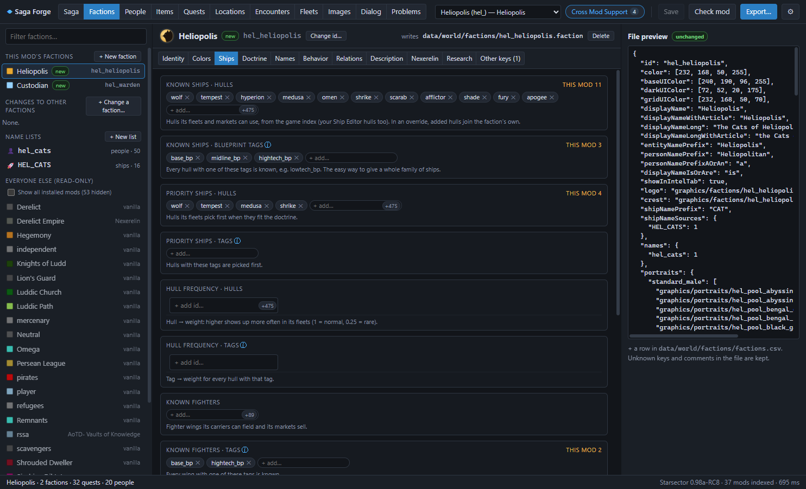
Ships Doctrine
Doctrine Names
Names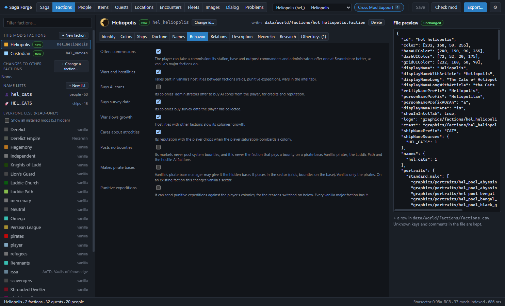
Behavior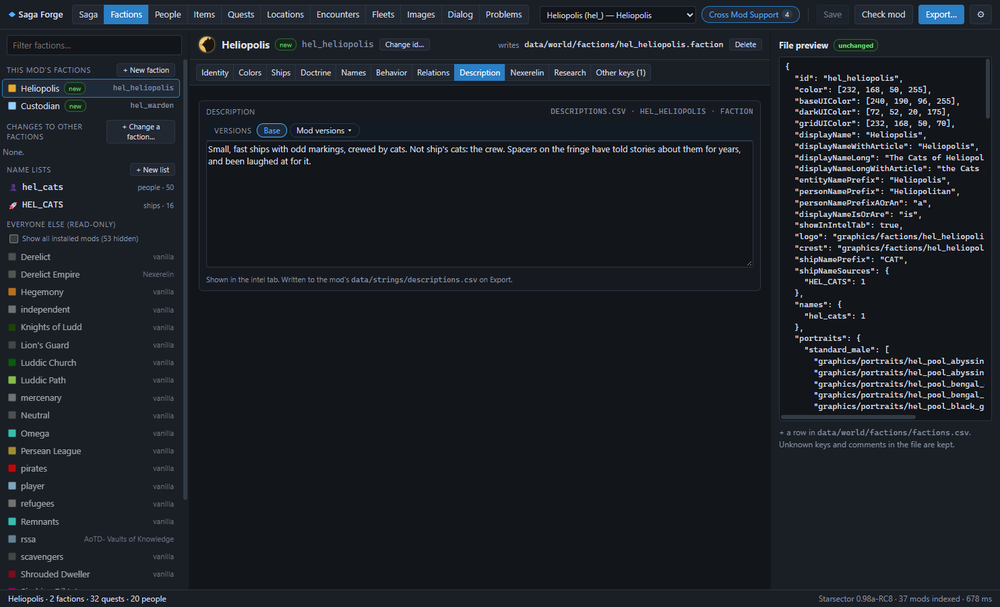
Description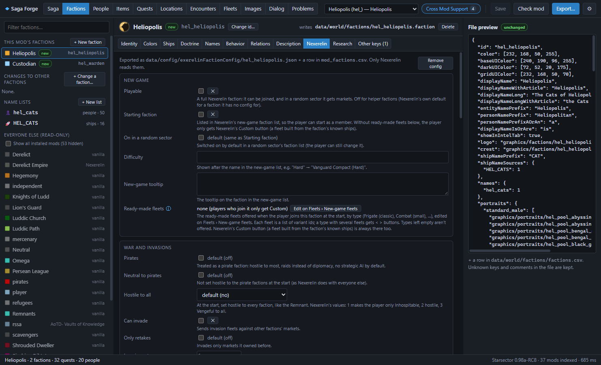
Nexerelin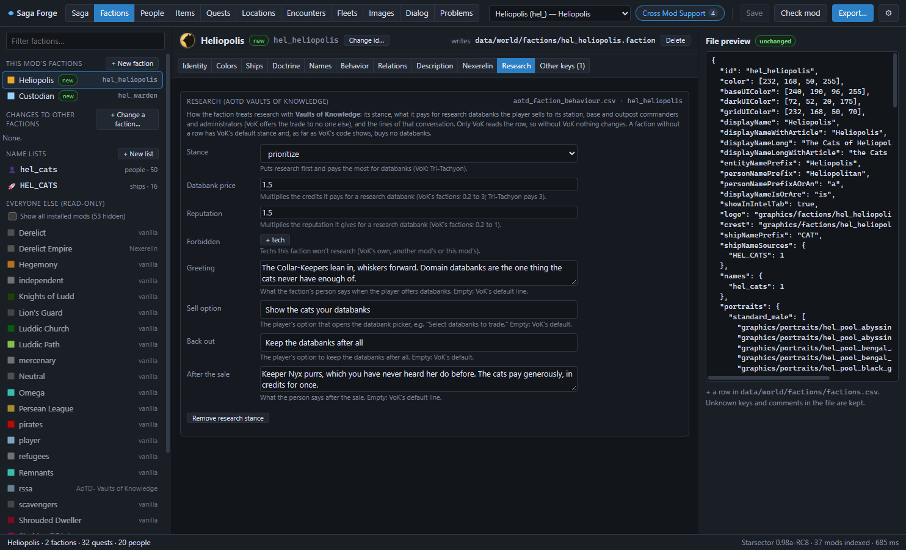
Research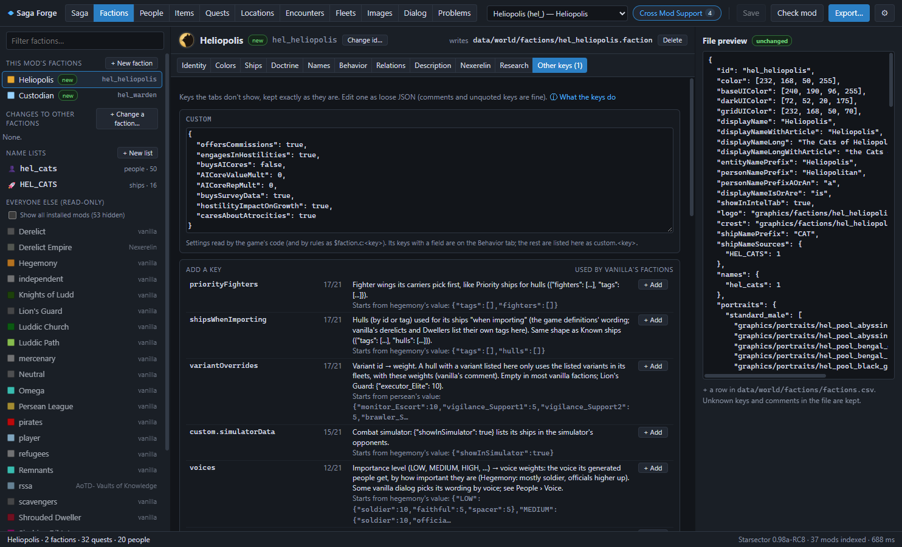
Other keysTwo tabs write elsewhere than the .faction file, because they aren't .faction keys:
- Relations (with the scripted changes) go into
data/sagaforge/factions.json, and SagaLib sets the relations when a new game starts and applies the scripted changes on every load, so the mod needs SagaLib. A scripted change sets at runtime what the.factionfile can't do per mod: the display name (and with "the"), logo, crest, secondary color, a known ship added or removed, a commodity made illegal or legal, a doctrine value, and shown in or hidden from the intel tab. With optional mods, the tab has a Versions strip (see Saga › Mods): each combination can have its own relations and changes. - Description goes into the mod's
data/strings/descriptions.csvwhen you export. - Nexerelin goes into
data/config/exerelinFactionConfig/<id>.jsonplus a row in that folder'smod_factions.csv. Only Nexerelin reads these files, so Nexerelin stays optional: your mod doesn't depend on it.
Nexerelin
Without a config, Nexerelin treats your faction as a bystander with neutral defaults: it can't be picked when starting a new game, never invades, has no diplomatic personality, and its starting relations follow whatever mode Nexerelin is in. The Nexerelin tab gives it a config, so it takes part like Nexerelin's own factions. The tab shows on your mod's own factions once Nexerelin is in Saga › Mods (optional is right: the files do nothing without it).
- New game: Playable, Starting faction (in the new-game list), On in a random sector, the Difficulty shown after its name, the New-game tooltip, and a count of its Ready-made fleets: the preset fleets a player who joins the faction at the start can pick. You edit them on Fleets › New-game fleets. Nexerelin's Custom button (a fleet built from the faction's known ships) is always there too, so without ready-made fleets the player only gets Custom; Problems notes it.
- War and invasions: pirates, hostile to all, can invade, how often and how big its invasions and response fleets are, ground bonuses, special forces.
- Diplomacy: morality, alignments, traits (hover one for what it does), liked and disliked factions, and Keep relations when randomized.
- Fleet names, Economy (free market, tariffs).
- Starting relations aren't edited here: the tab shows the faction's relations from Relations, and Export writes them into the config. With Nexerelin, Nexerelin then sets them, in the hand-made and in a random sector, and randomizes them only when the player picks random relations (unless Keep relations when randomized is on); SagaLib leaves them alone. Without Nexerelin, SagaLib sets them as always. A relation that only applies with or without some mod can't be in the config: it stays SagaLib's.
- Other keys: anything the tab has no field for is kept as it is, and can be edited as JSON. A mod that already has config files for its own factions has them read in when you first open it.
Name lists
A name list is one of two things:
- People's names: a name category for generated officers, administrators and contacts, with first names for men, for women and for anyone, plus last names. Export writes them as rows in the mod's
data/characters/person_names.csv, and the game adds them to its own names. - Ship names: a list of names, written to the mod's
data/strings/ship_names.json. The game appends it to any list with the same id.
A faction uses a list from Names › Person name sets or Ship name sources. On the list's own page, Used by lists the factions that use it (an unused list offers Use in a faction… instead), the counts at the top show how many names each gender gets, and the right column shows the rows as they will be exported.
How to set up the basics
Add a new faction
- Click + New faction (top left).
- Type the Name, e.g. Heliopolis. The Id below it is made from the name with your mod's prefix (
hel_heliopolis). You can change it later with Change id… until the mod is released. Saga Forge then moves the file and updates the relations, description and people that use it. - Click Create. The new faction starts with the keys vanilla factions have.
- Go through the tabs from left to right. On Identity, set the names and the ship prefix (CAT), then pick the flag and crest with Choose… (see Images › Pick an image for a field).
- Pick its ships (see Set the ships a faction uses), its relations (see Set starting relations), and write its Description.
- Save (Ctrl+S).

In game: the faction is in the intel tab's Factions list (unless In intel tab is off) with its flag, crest and description. Markets and fleets only exist once you give it some: see Locations › Add a station with a market and Encounters › Add a fleet for a quest.
Change an existing faction
- Click + Change a faction…, type the faction's id (the list shows each faction with its name, e.g.
hegemony) and click Change it. You can also click the faction under Everyone else and then Change this faction…. - It appears under Changes to other factions with an override badge, open on Ships.
- Change what you need. Lists only grow: type in + add… to add an entry. To change a number or text, edit the field; Revert puts back the original value.
- Watch the Patch file on the right: it holds only your changes.
- Save.

In game: the game merges your file into the original at load, so the faction has your changes plus everything vanilla and other mods give it. To take something out of a list, use the SagaLib scripted change (see New factions and changes to existing ones).
Set the ships a faction uses
- Open the faction and its Ships tab.
- Under Known ships · Blueprint tags, add tags such as
lowtech_bporbase_bp. Each tag gives the faction a whole family of hulls, which is the easy way. The suggestions list every tag with how many hulls, fighters, weapons and hullmods carry it, and the ⓘ opens the reference of blueprint tags. - Under Known ships · Hulls, add single hulls. Type in + add… to search the game's hulls (your Ship Editor hulls are listed too). An id the game doesn't know is marked, because the game won't start with it.
- Optional: Priority ships are picked first when they fit the doctrine, and Hull frequency makes a hull rarer (0.25) or more common (2).
- On the Doctrine tab, set how its fleets are built: the share of warships, carriers and phase ships, ship size and aggression.
In game: its fleets are built from these hulls following the doctrine, and its markets sell them. For a fixed fleet with exact ships, see Fleets › Make a named fleet.
Set starting relations
This works for your mod's new factions only: the Relations tab isn't there for a change to an existing faction.
- Open your faction and its Relations tab.
- In + faction…, pick another faction (or Player). It is added at 0, neutral.
- Drag the slider or type an exact value from -1 to 1. Level shows the name the game uses (Vengeful, Hostile, … Friendly, Cooperative).
- ✕ removes a row; that faction then starts neutral, as in vanilla.

In game: SagaLib sets these relations when a new game starts. They are not applied to existing saves, and the mod needs SagaLib. If the faction has a Nexerelin config, Nexerelin sets them instead whenever it is enabled (see Nexerelin).
Make a faction playable in Nexerelin
- In Saga › Mods, set Nexerelin to Optional.
- Open your faction and its Nexerelin tab, and click Add a Nexerelin config.
- Under New game, tick Starting faction, type a Difficulty (e.g. Medium) and a New-game tooltip.
- Click Edit on Fleets › New-game fleets next to Ready-made fleets and add the fleets (see Add new-game fleets).
- Set its Diplomacy (morality, alignments, traits, liked and disliked factions) and anything else you want; empty fields keep Nexerelin's defaults.
- Set its starting relations on Relations as usual, and export.
In game: with Nexerelin, the faction is in the new-game list as "<name> (<difficulty>)" with your tooltip, and starting as a member offers your fleets. Without Nexerelin nothing changes.
Add a name list
- Click + New list under Name lists.
- Pick For: people's names or ship names, and type a Name (e.g. cats). The id gets your prefix (
hel_cats; ship lists are in capitals, like vanilla'sSPACE). - Click Create and fill in the names, one per line: first names for men, for women and for anyone, and last names (or just the ship names, without the prefix: the game adds "CAT"). Empty lines and repeats are dropped. A Note is for you; it isn't exported.
- Click Use in a faction… on the list's page, or add the list on the faction's Names tab under Person name sets or Ship name sources, with a weight. The weights say how often each list is picked: with your list at 3 and vanilla's
modernat 1, about three of four names come from your own list. Heliopolis uses only its own lists (hel_catsandHEL_CATSat 1): remove vanilla's sets if only your names should be used.
 New name list
New name list The people's names list, filled in
The people's names list, filled in The ship name list, filled inNames: Heliopolis uses only its own name lists
The ship name list, filled inNames: Heliopolis uses only its own name listsIn game: people the game generates for the faction (officers, administrators, contacts) get names from your list, and its ships get names from your ship list. A people list without last names borrows them from a random category.
People
The People tab is where your mod's named characters live: who they are, where they are in the sector, whether they can become the player's contact, and how they word things.
How it works

The tab has three columns:
- On the left, the people list.
- In the middle, the selected person's form.
- On the right, a Preview of how they look in dialog, and a Used by list.
The people list
- This mod's people: the characters your mod adds, marked new, with their rank. + New person adds one. The inactive box shows or hides people marked Inactive (see below).
- Existing characters (read-only): the named people of the game and of the mods your mod lists in Saga › Mods (vanilla's are made in code, shown as "code (vanilla)"). Show all installed mods adds the others, with how many are hidden. Your mod never changes them, but your quests can talk to them: use their id in a quest (see Quests › Write a conversation).
The filter box searches both lists by name and id.
The person form
The header has the name and id, Inactive and Delete; under it, the Versions strip when the mod lists optional mods, settings for versions, or for the player's gender (see Saga › Mods). Then, from top to bottom:
- One name: for a character with a single name (a cat called Tyger). The game keeps it as the last name with an empty first name, and shows the one name everywhere. New person can make one directly.
- First name, Last name, Gender: shown in dialog, the comm directory and the intel screen (a one-name character has only Name). Gender picks he/she in vanilla's tokens such as
$personHeOrShe. - Faction: their name and color under the portrait, and the reputation tests in dialog.
- Rank and Post: "Captain Halvard Oduya", and their job at the market. A staff post (station commander, portmaster, administrator, …) at a market takes over that post from the person vanilla generates there. A commander or administrator also offers the player a commission when the faction does (see Factions › The faction tabs, Behavior). With Nexerelin in Saga › Mods, a warning shows when a quest contact is an administrator, portmaster, supply officer or station, base or outpost commander at a market that can be invaded: when Nexerelin captures the market, the new owner's faction takes the post over, and the contact changes faction with it. Give them another post, protect the market from invasion (one click for your own markets), or set the quest's If a market of this quest changes owner.
- Portrait: a game portrait (referenced, not copied) or your own 128×128 PNG (copied into the mod).
- Voice and Personality: vanilla's voice tag (soldier, spacer, …; some vanilla dialog picks its wording by it, it is not a sound), and how they fight when they command a ship.
- Placement: where SagaLib puts them in the sector: at a market, commanding a fleet (encounter), or nowhere until a quest needs them.
- Presence (someone at a market): always present, or only while the market's owner gets on with a faction: the owner must be at least some level (Vengeful … Cooperative, or not hostile) with a faction, by default their own. A Hegemony loyalist at a station, say, leaves when the station is held by someone worse than Neutral toward the Hegemony. SagaLib checks once a day and when a game loads, so a new owner, a war breaking out and peace all count. While they are away they are hidden from the comm directory, quests with them as contact aren't offered, and
$global.sagaforge_away_<id>is true for dialog and Branch cases to test (the condition picker has "<name> is away"). Elsewhere: a market where they're listed while away (their quests still aren't offered); empty = nowhere. The line under it says whether they'd be present at the start; vanilla sets most relations in code, so for those it can only tell in game. A quest they offer gets an info line in Problems: decide what happens to it when they leave, with the quest's If a market of this quest changes owner or a test of the away flag in its dialog. Play mode and the Test context have a "<name> is away" switch. - Contact: whether they can become one of the player's contacts, with their types (military, trade, …) and importance.
- Phrases: the character's own words, tokens you can put in any dialog text (see Give a character phrases).
- Description: a short biography for you and other modders. Not shown in game.
Some fields have a small later mark under their name: click it to mark the field Set later when you don't know the value yet; it then shows ✎ to do and is listed under To do in Problems (see Problems › Mark a field Set later).
The bar at the top has Inactive: an inactive person is planned but not ready. They are not exported, so they aren't in the game, and their problems show as warnings instead of errors.
Preview and Used by
The Preview shows the dialog's person panel: portrait, name, rank and post, faction, and what $personName, $personFirstName and $personLastName say in dialog with them. With a version open, it shows that version. If they have phrases, it shows what each phrase becomes in three situations (no commission, friendly with the faction, commissioned).
One-name characters in game. Vanilla leaves $personFirstName empty for them ("Hi, ."), so SagaLib 1.4 fills it, and $PersonFirstName, with the one name, and their $<id>_firstName token is the one name too. Play mode and the Test context do the same; another mod's person whose name is one word counts as one-name. Problems warns where a line uses $personFirstName with a one-name person in the conversation, so you can check the wording.
Used by lists the quests that use them (the contact who offers a quest, the speaker of a dialog) and the market they are placed at. Click a line to open that quest.
What it writes into the mod
Export writes your people to data/sagaforge/people/<mod id>_people.json. SagaLib creates them when a new game starts and when a save is loaded, so a mod with people needs SagaLib. An existing save gets new people on its next load; a person already in the save is updated, not duplicated.
How to set up the basics
Add a character
- Click + New person.
- Type a First name and a Last name, or tick One name and type the name. The Id is made from the last name with your mod's prefix (
hel_tyger). Quests and saves refer to them by it, so don't change it after a release. - Click Create. The new person belongs to your mod's first new faction (or the independents) and isn't placed anywhere yet.
- Set Gender, Faction, Rank and Post. Type in the Rank and Post boxes to search the game's ranks and posts; the ⓘ next to them opens the app's reference page about them.
- Pick a Portrait (see Use your own portrait).
- Choose the Placement (see Place a character at a market).
- Save (Ctrl+S).

In game: the person exists from a new game (or the next load of a save), at their placement. To have them commanding a fleet, set Placement to commanding a fleet (encounter) and pick the encounter (see Encounters › Add a fleet for a quest).
Make a character a contact
- Open the person and tick Contact (under the Contact heading, below Placement).
- Tick their Types: the tags in the intel screen's Contacts list (military, trade, underworld, …). Vanilla's missions use them to pick who offers what.
- Pick their Importance. More important contacts offer bigger jobs and cost more to keep.
- Give them a quest to offer: a quest that starts offered by a contact (person_missions.csv), with this person (see Quests › Make a contact quest with stages).
In game: SagaLib makes them a potential contact the vanilla way. Like vanilla's mission givers, they can become one of the player's contacts (the intel screen's Contacts), and the quests they offer show in their dialog.
Place a character at a market
- Set Placement › Where to at a market.
- In Market, pick a market of your mod (shown as "(this mod)") or an existing one, e.g.
chicomoztoc. For a market of your own, see Locations › Add a station with a market. - Leave Comm directory ticked so the player can call them when docked.
- For a station commander, portmaster or administrator, set Post to that post: they take it over from the person vanilla generates there.
The market's page on the Locations tab lists them under its people too; changing either place changes both.
In game: they are at that market and in its comm directory. If the market is in a star system your mod adds, SagaLib places them once the system exists.
Use your own portrait
- Make a 128×128 PNG (vanilla's size). A bigger picture is fine: Saga Forge crops and resizes it.
- On the person, click Choose… next to Portrait. The picker shows your mod's portraits first, then the game's and other mods' ones.
- Pick one, or click Import… to bring your own file into the mod: choose the file, crop it, and Saga Forge saves it to the mod's
graphics/portraits/with your prefix in the name. For more on importing, see Images › Import images. - You can also type a path in the box, e.g.
graphics/portraits/portrait_mercenary02.png.

In game: the portrait shows in dialog, in the comm directory and in the intel screen. A game portrait is only referenced; your own is copied into the mod and goes with it.
Give a character phrases
A phrase is a token, such as $hel_pops_title, that you put in any dialog text. When the game shows the text, SagaLib replaces it with the character's own wording for the moment. Pop Chicken calls the player "friend of the Den" once they have traded AI cores with the cats, "human" once they have met them, and "captain" before that.
- Open the person and scroll to Phrases. Click + Phrase.
- Name the token: it always starts with the person's id (
$hel_pops_), you type the rest (title). - Pick how it chooses: first case that matches, or random.
- For first case that matches, give each case its if lines (conditions, one per line, as in rules.csv; + add… under the box offers common ones such as a reputation or commission test) and its text. + case adds one. The otherwise text is used when no case matches. For random, every case is one possible text.
- Put the token in a dialog text, e.g.
"Ah, $hel_pops_title! What can old Pops do for you?" - Check the Preview on the right: it shows what the phrase becomes in three situations.

In game: SagaLib replaces the token wherever it appears in dialog text. Phrases that belong to the whole mod rather than one person are on the Saga tab (see Saga › Add a phrase).
Items
The Items tab is where your mod adds its own cargo items: quest items the player carries, trade goods and rare valuables.
How it works

The item list
- This mod's items: the items your mod adds, each marked special or commodity. + New adds one.
- Existing items (read-only): every commodity and special item of the game and of the mods your mod lists in Saga › Mods (Show all installed mods adds the others). Click one to see its icon and description. You can't change them here (a row with the same id in your mod would replace the whole row), but your quests can give, take and test them by their id.
Commodities and special items
The game has two kinds of cargo item, and Saga Forge makes both:
- Special items (
special_items.csv): single things with their own tooltip, like vanilla's AI cores, blueprints or the Janus Device. Quest items are special items with the tagmission_item: markets refuse to buy them and they aren't lost in battle. - Commodities (
commodities.csv): goods counted in units, like supplies or drugs, with a price that markets trade at.
You rarely pick the kind yourself. Each new item starts from a preset:
| Preset | Kind | What it is for |
|---|---|---|
| Quest item | special | Something a quest gives and takes back: not traded, not lost in combat, hidden in the Codex, price 0. |
| Trade good | commodity | Something markets buy and sell, with a base price. |
| Rare valuable | special | A valuable find worth 50,000 credits, with a Codex entry. |
| Special trade good | special | Something to buy and sell outside the economy: a stack of up to 100, base price 1,500, no rarity (it doesn't turn up in salvage by itself). Markets don't produce or need it. |
Special items use vanilla's generic item plugin, so they need no code.
Heliopolis has quest items (Dr. Sallow's log, Butters's coordinates), rare valuables (Purr-sealed token) and a special trade good, Sunleaf, the catnip the Midnight Zoomies smuggle. A commodity's description goes into descriptions.csv (the bar above the form says so), and its Other columns hold the economy values of the Trade good preset.

The item form
- Preset: picking one again resets the kind, tags and columns to that preset. (custom) means the item no longer matches a preset; picking it changes nothing.
- Name and Icon: shown in the cargo screen, tooltips, markets and the dialog's "Gained" lines. The icon is an 80×80 PNG.
- Base price, Stack size, Cargo space: the price before markets change it, how many fit in one cargo-grid stack, and how much room each unit takes.
- Tags: vanilla's item tags. Hover a tag in the + tag… list for what it does.
- For special items: Rarity (how often it turns up in salvage and loot; 0 = never, only a quest gives it), Plugin (the Java class behind it; the default works for plain items) and Plugin params.
- Description: the text in the item's tooltip and its Codex entry.
- Other columns (folded): the rest of the CSV row, written as it is, and the row as it will be written.
- Used by: the quests that give, take or test it. Click one to open it.
What it writes into the mod
Export writes one row per item into the mod's own data/campaign/special_items.csv or data/campaign/commodities.csv. A commodity's description goes into data/strings/descriptions.csv; a special item's goes into its own row. The bar above the form says which file the item writes to. Items don't need SagaLib.
How to set up the basics
Add a quest item
- Click + New.
- Type the Name, e.g. Dr. Sallow's log. The Id is made from it with your prefix (
hel_sallow_log); quests and saves refer to it, so don't change it after a release. - Leave Preset on Quest item and click Create.
- Write the Description: the text the player reads in the tooltip.
- Give it an icon (see Give an item an icon).
- Save (Ctrl+S).
To hand it to the player, show it in a dialog or give it in a reward (see Quests › Give a reward). To check whether the player still carries it, test it in a condition; the item's Used by list then shows that quest.
In game: the item shows in the player's cargo with its icon and description. Markets won't buy it, and it isn't lost when ships are.
Add a special item
A special item the player can find, sell or install, rather than one a quest hands out:
- Click + New, type the name, and pick the Rare valuable preset. Click Create.
- Set Base price (what markets pay before their own changes).
- Set Rarity above 0 if it should turn up in salvage and loot.
- Leave Plugin on the game's generic plugin. Its Plugin params are the industries the item can be installed in, comma-separated (e.g.
heavyindustry, orbitalworks); leave them empty for an item that is only carried or traded. The list has the game's other plugins, each with a short summary, and your own Java class works too: type its full name. - Write the Description and pick an icon.
In game: it shows in cargo and markets like vanilla's special items, with a Codex entry. To put it in salvage on purpose, add it to a loot table (see Saga › Make a loot table).
Give an item an icon
- Make an 80×80 PNG (vanilla's size). A bigger picture is fine: Saga Forge crops and resizes it.
- Click Choose… next to Icon. The picker shows your mod's icons first, then the game's.
- Pick one, or click Import… to bring your own file in: choose it, crop it, and Saga Forge saves it to the mod's
graphics/icons/cargo/with your prefix in the name. For more on importing, see Images › Import images. - Or type a path in the box, e.g.
graphics/icons/cargo/hel_sallow_log.png.
A new item starts with a placeholder icon (a plain chip for special items). If you don't have the picture yet, click later under Icon to mark it Set later (see Problems › Mark a field Set later). Check mod reports an icon whose file doesn't exist.
In game: the icon shows in the cargo grid, tooltips and markets.
Quests
The Quests tab is where you write quests and conversations: a flow chart of what the player sees and does, with an in-game-style preview of every dialog and a Play mode that runs the quest the way the game will.
How it works
The page has four parts: the quest list with the quest's stages and variables on the left, the flow chart in the middle, the dock under the chart (dialog preview, problems, play log), and the inspector on the right. The inspector shows the quest's settings when nothing is selected, and the selected node's settings when you click a node.

There are two kinds of quest:
- Quest (journal, stages; SagaLib): the player accepts it, it gets an entry in the intel screen with a journal text per stage and a map marker, and it ends in success or failure with a reward. Quests run on SagaLib, so your mod needs SagaLib (Export offers to add it to your
mod_info.jsondependencies). - Conversation only: just dialog, such as an option at a market, a greeting when the player hails a fleet, or a scene at a wreck. Nothing appears in the journal. A conversation doesn't need SagaLib unless it uses one of SagaLib's commands (a random branch, progress, spawning a fleet …).
What a quest writes into the mod when you export:
| File | What |
|---|---|
sagaforge/quests/<id>.quest.json | The plan you edit here (chart, stages, settings). Saga Forge's own file, the game doesn't read it. |
data/campaign/rules.csv | The dialog: one block of rows per quest, between # sagaforge:begin quest=<id> and # sagaforge:end marker rows. Saga Forge rewrites only its own blocks, so rows you or other tools add outside them stay. |
data/campaign/person_missions.csv / bar_events.csv | A row per quest offered by a contact or at a bar, in an owned block. |
data/sagaforge/quests/<id>.json | The quest's stages, rewards and variables, read by SagaLib. |
data/sagaforge/text.json | The dialog texts, so a translation mod can replace them. |
The quest list
The left column lists the mod's quests and conversations. Conversations say dialog only; quests show their id. + New quest makes a new one; the inactive box shows or hides quests you marked inactive (planned, not exported).
Under the list are the open quest's MagicLib bounties (once the mod lists MagicLib), Node groups (the groups this mod has, see Node groups), Stages (journal) and Variables:
- Stages are the journal steps of a quest, see Stages.
- Variables are values the quest remembers in the save, such as the agreed pay. Each has a name, a type (number, string, bool, entity, person, or random target) and a starting value. In conditions and Set actions they are
$global.<quest id>_<name>, e.g.$global.hel_voice_probe_offer. The player never sees them unless a text uses the token. They get their starting value when a contact or bar event offers the quest; with any other start, only when the quest starts (its first Stage node), so an offer before that can't show them. - A random target variable is a place SagaLib picks in each game (for example "a pirate market that isn't hidden"), or a commodity at a market (something a Heliopolis market needs). Its button opens its search. Stage map markers, Arrive nodes and the Spawn at the random target action can then use it as
target:<name>. See Send the player to a random place.
Quest settings
Click the empty chart to see the quest's settings in the inspector:
- Id: the mission id and the start of every rule id. Saves remember it, so don't change it after a release. Change id… changes it everywhere in the mod (conditions and test profiles follow).
- Title: the name in the intel screen, the journal and the contact's mission list.
- Kind: quest or conversation only (see above).
- Inactive: planned but not ready. It isn't exported, its problems become warnings, and its to-dos don't hold back a release.
- Template: Save as template… keeps a copy for New quest › Start from (in Saga Forge's own data folder, for every mod).
- Repeatable, Icon (64×64, Choose… picks one by picture, see Images › Pick an image for a field) and Time limit (days after accepting; the quest fails when they run out).
- If a market of this quest changes owner (a Nexerelin invasion, a rebellion, a sale, another mod): SagaLib remembers who owns the quest's markets when it starts (the giver's market, stage markers, Arrive places, named places, random targets that are markets) and checks them once a day. Keep going (don't watch) is the default; keep going (set the keys), fail the quest, or go to a stage, where what follows that Stage node in the chart runs (a dialog can bring the news). Every choice but the first sets
$global.<quest>_ownerChanged(the market id) and$global.<quest>_newOwner(the faction), for dialog and Branch cases. In Play mode, the green bar offers "<market> changes owner to …" while the quest is active; in game, SagaLib's dev menu (Ctrl+F9) has Change a market's owner. - How it starts: where the player first meets the quest, see the table below.
- Prerequisites: other quests that must have ended (succeeded, failed or either), flags that must be set, or one of the mod's settings (see Saga › Switch a questline on or off), before the quest is offered or starts.
- Rewards: named rewards (credits, XP, story points, reputation, items, random items from a drop group) that an End node or a Give a reward action pays. See Give a reward. The credits can be Scaled by a setting, such as a difficulty (see Saga › Settings).
- Notes: for you only, never exported.
| Start | Where the player meets it | Written to |
|---|---|---|
| offered by a contact | The contact's mission list ("Do you have any work?" on the comm link) | person_missions.csv |
| a bar event | A patron at a colony's bar | bar_events.csv |
| an option added to a menu | An option in a market's, person's or fleet's menu; the menu's own options stay | rules.csv |
| a dialog that opens on a trigger | A dialog that opens by itself, e.g. when hailing a fleet (OpenCommLink) or visiting a place (OpenInteractionDialog) | rules.csv |
| started by another quest | Another quest's Start another quest action | (SagaLib) |
| an interjection before an existing option | Your scene plays first when the player picks an existing option, e.g. vanilla's Explore at a derelict | rules.csv |
| a bar scene (no mission) | A story scene at a bar, like vanilla's own | rules.csv |
Every start kind shows its own fields with help under each one (the contact or contact tags, how often it is offered, the blurb, the option text, conditions …).
A quest that starts from an option, a trigger, an interjection or a bar scene is only offered until the player accepts it; a repeatable one comes back after it ends. The export adds that test to the start's conditions (a contact or bar event leaves it to vanilla's mission list).
An interjection plays before an existing option and then hands back to it, so vanilla's own dialog goes on (Lost Kin's pod scene, then vanilla's salvage). A branch of it that ends at a Wait (a Stage node, then an Arrive) hands back too, so the quest moves on and the salvage still happens in the same visit.

Stages
A quest's stages are its journal: while the player is at a stage, the intel screen shows its text and the map marker points to its place. They are listed under Stages (journal) on the left; + adds one and opens its form. Each stage has:
- Id: what saves remember. Never shown in game. Change it only with Change id… (see Rename a stage after a release).
- Title: the stage's name in the intel list (when the next-step line is empty) and on the stage's frame on the chart.
- Journal text: the paragraph in the intel screen's panel for the quest at this stage.
- Next-step line: the short line under the quest's name in the intel list and in the "quest updated" notification.
- Map marker: where the map's quest marker points: one of your places, a vanilla market or entity, a person (their market) or a random target.
- Kind: normal (the quest goes on), or a stage that ends the quest in success or failure as soon as it is reached.
- Old ids: ids the stage had in earlier releases (filled in for you by Change id…).
A Stage node on the chart moves the quest to a stage. The chart draws a coloured frame around the nodes that belong to each stage, labelled with the stage's id and title.
The flow chart
The chart is the quest from start to end. Each node is a step; each of a node's outputs (a dialog's options, a branch's cases, an encounter's outcomes) has a dot on its right edge, and a line from the dot to the next node says what happens next.
- Add a node: double-click the empty chart, or drag from an output's dot into empty space (the new node is then connected to that output). Both open the node menu. The + Node list in the toolbar adds one in the middle of the chart.
- Connect: drag from an output's dot onto a node. An output leads to one node; dragging again replaces the line.
- Delete: select a node or line and press Delete. Ctrl+D duplicates the selected node, Ctrl+Z / Ctrl+Y undo and redo.
- Auto-layout tidies the chart; Find Ctrl+F finds a node by text, option or id.
- The zoom buttons and the minimap are in the chart's corners. A quest opens on its Start node: a short one fits the view, a long one shows at 70% so its nodes stay readable.
Node types
Click a node to edit it in the inspector. Every node has a Node id (part of its rule ids, never shown in game), and most inspectors end with Exported as: the rules.csv rows the node becomes.
Start
Where the quest begins. It has no settings of its own: how the player gets here is the quest's How it starts (click the empty chart).
Dialog
A page of dialog: text on the left, a picture on the right, options under the text. This is the node you will use most.
- Title: names the node on the chart (not shown in game).
- Speaker: who is talking, picked from the mod's and the game's people.
- Visual: what the right half of the dialog shows: the speaker's portrait (with up to two more people beside them), an illustration, a large planet, a map marker, both fleets, one ship, or keep the previous picture. An illustration can have a second picture, Female player, shown instead when the player character is female (a scene with the player's figure in it). It needs no SagaLib: the export writes a second rule on
$player.gender == FEMALE. - Text: what the player reads. "Speech in quotes," narration in the second person. A blank line starts a new paragraph; a line with only
ORstarts a random variant. + variation adds wording that changes with the situation (see Saga › Add a phrase). For tokens such as$playerName, see Tokens below. - When you come back: + repeat text gives the node a second, shorter text for when the player returns to it (a question's Back, a loop), with the same options and displays. The text above is then the first-time text. First time is once per visit (the full text again the next time the dialog opens; nothing is saved) or once ever (a saved flag). The chart, the Script view and Play mode show both.
- Highlights: words or numbers drawn in the highlight colour, as vanilla marks names and sums (separate them with
|). - Displays: panels after the text or after a paragraph: "Gained" lines for credits, items, story points, XP and reputation (these also change the player's cargo, credits or reputation), an extra small grey paragraph, a cost panel, a faction callout, sounds and music, and more.
- Options: the choices under the text, numbered as in game. Each has a dot on the chart. ⋯ opens an option's settings: its id, a tooltip, a story-point cost (a green story option with vanilla's confirmation), the Esc shortcut, show once (per conversation or for good), only show if conditions and disabled if conditions. With no options, the dialog continues to the next node by itself.
- Extra conditions and Extra script lines: rules.csv lines for things the editor has no form for. Most dialogs need none.
The Dialog preview in the dock draws the selected Dialog node the way the game does, with the game's font. whole window 1:1 shows it at the game's size. On the right of the dock, the Test context sets the sample values the preview uses: the player's name and gender, the speaker, faction and place. They are for the editor only.
 A Dialog node: Mousey's workshop in A Favour for Mousey, with the preview in the dock
A Dialog node: Mousey's workshop in A Favour for Mousey, with the preview in the dock An option's settings (⋯): a question shown once per conversation
An option's settings (⋯): a question shown once per conversation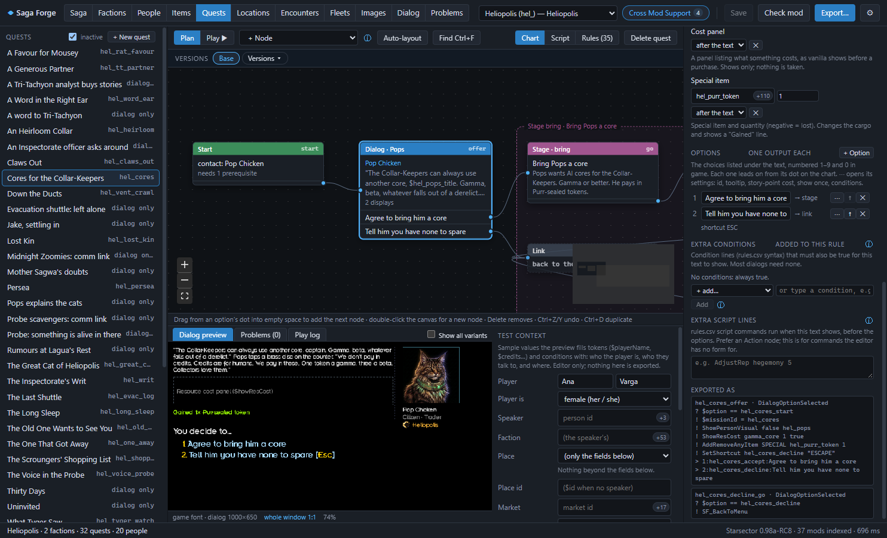
Displays: a cost panel and the special item the cats ask for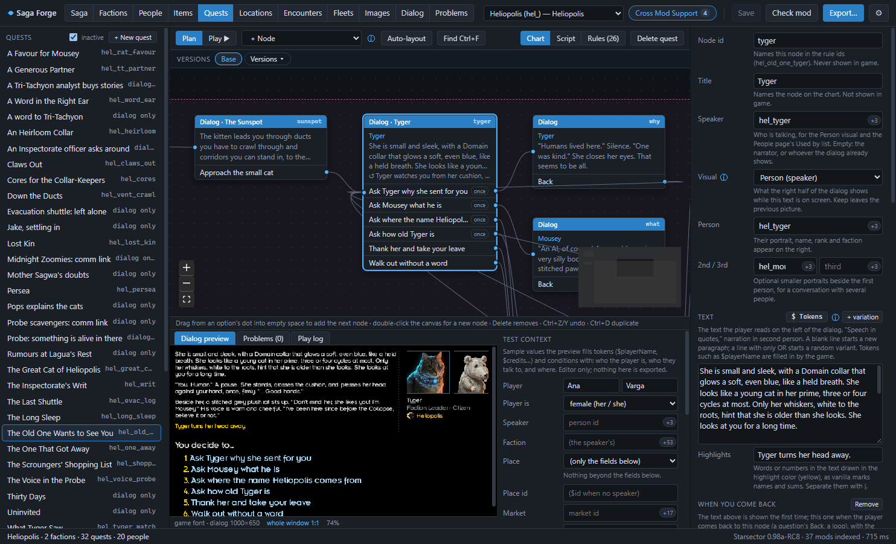
When you come back: Tyger's full scene the first time, a short line after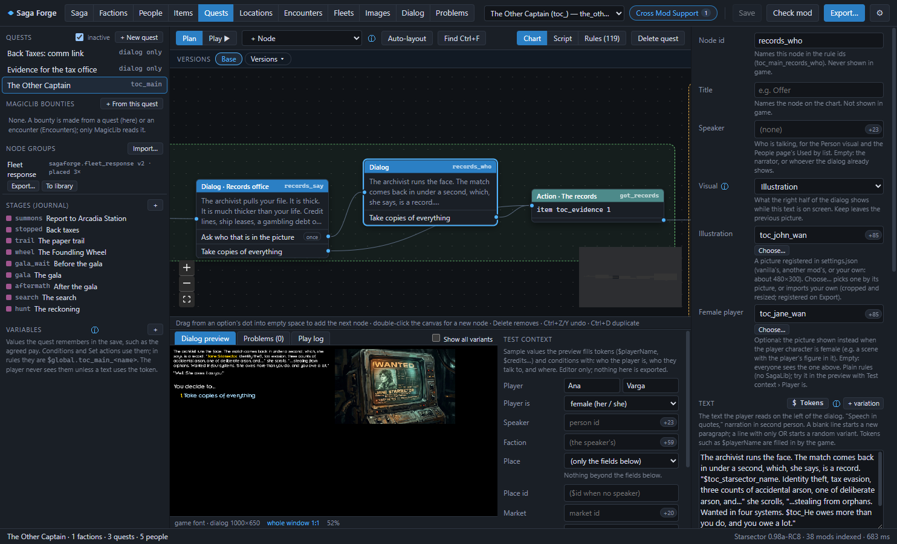
An illustration with another picture for a female playerTokens
A token such as $playerName or $personName is replaced in game by a name or a word. $ Tokens (next to the dialog text, and next to an encounter hail's first lines) opens the token window, which stays above the editor while you write:
- Every token, searchable (by token, meaning or value) and grouped: this conversation, your people (each character's
$<id>_name,$<id>_firstNameand$<id>_lastName), the player, the person you talk to, their faction, the market, the place, the fleet, phrases and quest variables. Recently used ones come first; Aa switches to the capitalised form ($PersonName). - Each row shows what the token becomes in this conversation, with portraits and crests. The top of the window says who
$person…is here: a contact's mission names the contact, a fleet's comm link its Flagship by (or "made up by the game"). Tokens that aren't filled here are greyed with the reason (market tokens in a comm link). - Insert puts the token at the cursor of the last text field you clicked; Copy copies it.
Typing $ in any text field that takes tokens (dialog text, options, repeat text, displays, phrases, arrival and raid texts, start options, a hail's lines) suggests tokens from the same list. Problems warns about market tokens in a comm link, $person… in a comm link without a Flagship by, and a portrait that isn't the person the $person… tokens name.
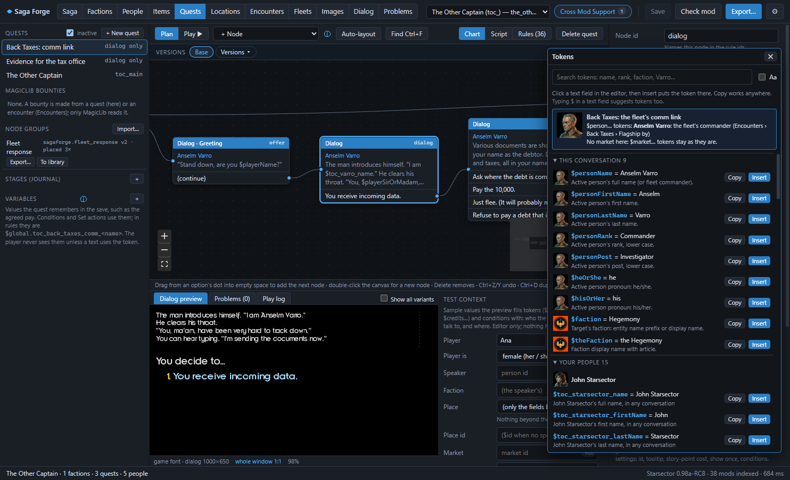
The token window on Back Taxes' comm link: Anselm Varro is $personName here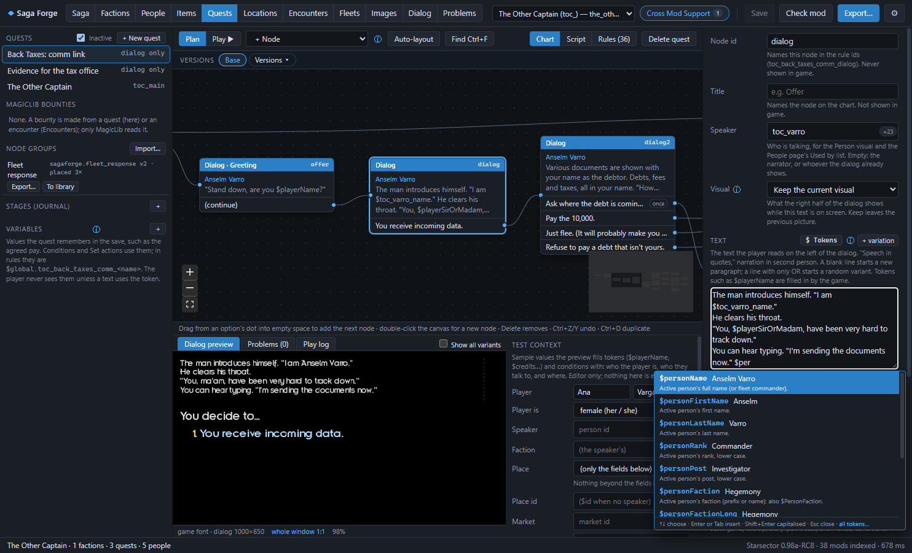
Typing $ in the dialog text suggests tokensBranch
Picks a way on without showing anything to the player.
- By conditions: each case is a label (chart only) and condition lines that must all be true. A matching case is taken (when several match, the game takes the one with the most conditions); otherwise is taken when none match.
- At random (by weight): picks one case like a dice roll. Each case has a weight, and can be limited (once per playthrough, once per place or person, a cooldown in days, at most N times). A Nothing weight makes otherwise possible. The cases can also come from a named pool (see Add a random branch). Random branches need SagaLib.

Action
Things that happen in order, then the quest goes on. Nothing is shown unless a step says so. + add… offers: set a variable or flag, clear a flag, give or take credits, change reputation, give or take an item, give a reward, story points, experience, spawn an encounter, an encounter leaves, place or remove an object, remove a person, spawn something at the random target, take or give the target's goods and pay for them (a commodity target), start another quest, add progress to a progress event, run a plugin (see Plugin), start a MagicLib bounty, unlock a MagicLib achievement (Saga › Achievements), unlock or grant Vaults of Knowledge research (Saga › Research), or a raw rules.csv script line. Each step has its help text under it. Two of them in more detail:
- Change reputation chooses whose: a faction, a person (one of your characters or the game's; exported as vanilla's
AdjustRepPerson) or the person you're talking to (AdjustRepActivePerson). - Start another quest picks the quest and the stage it starts at; it preselects the stage that quest's Start leads into. Problems warns when a quest with a first stage is started without one (unless that quest moves to it itself) and names a stage it doesn't have.
Stage
Moves the quest to a journal stage: the intel screen shows the stage's text, the map marker moves, and a success or failure stage ends the quest. + New stage… in its list adds a stage and opens its form on the left.

Encounter
Puts one of the mod's encounters (a fleet) in the sector. It has three outputs: after spawning continues at once; Defeated and Avoided continue later, when SagaLib reports what happened to the fleet. + New… creates an encounter at the current stage's map marker; you then set up its fleet on the Encounters page. If the encounter has its own outcome actions (Encounters › When defeated / When avoided), they run first, then this node's output. See Add a fight.
Fight
A battle on the spot, like the automated defences at Remnant-guarded ruins: when the dialog reaches the node, SagaLib builds the fleet and opens vanilla's battle dialog (Engage or Leave). No fleet flies around before or after. The fleet is set on the node itself, like an encounter's:
- Engage option: the text of the option that starts the battle (empty: vanilla's "Engage the automated defenses").
- Ships: from the faction's doctrine (Faction and Fleet points), exact ships, or one of the mod's named fleets (see Fleets); then Quality, Flagship by and Fleet name.
Its outputs are Won (the fleet was beaten; the dialog goes on at the place) and Left (the player left or lost; leave it unconnected and the dialog closes, as vanilla's does). A fleet the player damaged and left stays damaged for 10 days. In Play mode the green bar asks how the fight went. Exported as SF_Fight; needs SagaLib 1.4.
Wait / Arrive
Waits until the player arrives at a place, or for a number of in-game days.
- Arrive: Place is the planet, station or wreck the player must reach (usually the stage's map marker). Shows as is either an option in the place's menu (the place's normal dialog stays, with your option added) or takes over the arrival (your scene opens as the player arrives, for a hail as they dock). Text is the first paragraph of the scene. When a lock-like conversation guards the place (dialog, branch and Link nodes that only leave, as "Protect this wreck" makes), its Arrive nodes take over the arrival by themselves.
- Timer: waits the given number of days, then the next node runs. Nothing is shown.
See Wait for the player to arrive.
Raid
A ground raid on the place the dialog is at, like vanilla's story raids: a briefing, then vanilla's raid menu with one objective where the player commits marines. Its outputs are Raid done and Backed out. You set the objective's name, danger level, the defenders' strength, the experience, and the text shown during the raid. Use it in a dialog at a planet, station or colony. No SagaLib needed.
End
Ends the quest: success, failure or abandoned (like the player's Abandon button), and optionally pays one of the quest's rewards. Once the mod has MagicLib achievements (Saga › Achievements), an Achievement field unlocks one there too; once it lists Vaults of Knowledge, a Research field gives techs as researched (Saga › Research). The conversation can go on after it, for a last line or a Link back to the menu.
Link
Leads out of your quest into existing dialog without changing it:
- back to the menu (the safe ending): back to the market's, contact's or fleet's options, or closes the dialog where there is no menu (a wreck).
- close the dialog (vanilla's
EndConversation): for a comm link that ends ("Cut the link"), a fleet that leaves, or a scene that ends the visit. In a fleet's comm-link dialog, back to the fleet screen cuts the link and returns to the fleet's Engage / Leave screen instead. - back to the bar: the end of a bar scene.
- fire a trigger: e.g.
OpenInteractionDialogto reopen the place's own dialog, orPopulateOptionsto rebuild its menu. - into an existing option id: e.g. vanilla's
defaultLeaveorcutCommLink. - to another node of this quest.
To find vanilla triggers and option ids, see Dialog › Find a vanilla dialog rule; the ⓘ next to the target opens the reference of every dialog option the rules of vanilla and your listed mods answer.
When a Link fires a trigger into a node of another quest or conversation (one conversation continuing another), that node gets an info line saying where it is entered from, and the nodes after it count as reachable.
Plugin
Runs a piece of your mod's own Java code, for what no node can do (Heliopolis's Persea Fever shrinks colonies across the sector). The class is in a jar your mod ships and implements SagaLib's lastai.sagalib.api.SagaPlugin.
- Class: picked from the classes in the jars your
mod_info.jsonlists under"jars"(read from the jars themselves, plugins first; no Java needed). Rescan jars after you rebuild one. Any name can be typed. - Arguments:
key = valuepairs the plugin gets; a value starting with$is read from memory when it runs. - Results: the results the plugin may return, one output each, plus otherwise (no result, another one, or a failure: SagaLib writes it to the log and the game goes on). The result is also kept in
$global.<quest>_<node>_resultfor later Branches.
The action Run a plugin (in Action nodes, world events and progress stages) runs one without branching. Play mode can't run Java: it shows a button per result and "No result, or the plugin fails". Problems checks the class, the jar and the results. Exported as SF_RunPlugin; needs SagaLib 1.4. How to build a plugin jar is in FORMATS.md, "Plugins".
Node groups
A node group is a set of normal nodes that shows as one node with a few fields of its own, for steps you repeat. + Node › Node groups places one; the export, Play mode, the Script view and Problems see the nodes it stands for. The first one is built in:
- Fleet response ends a fleet's comm-link dialog the vanilla way (as the Knights of Ludd's stop): let them go (the fleet leaves; its encounter counts as avoided), fight (the fleet turns hostile and the player can't leave), or player flees (the fleet chases; a later hail can test "The player fled from this fleet"). Each one cuts the comm link back to the fleet screen. Use it in an encounter's comm-link dialog with a hail (see Encounters › Make a fleet stop the player).
The mod keeps its own copy of every group it uses (sagaforge/nodegroups/<id>.group.json), so it never depends on files outside it. In the quest list on the left, Node groups lists them, how often each is placed, Export… (a file to share) and To library (your library folder, for your other mods; see Settings); Import… adds a shared one. A group has an id and a version number: when a newer one exists (built in or in your library), the node offers Replace…, which keeps the values by field and lists what would be lost first. Expand into nodes turns a placed group into its normal nodes, to change them by hand (one way). The file format is in FORMATS.md, "Node groups".
Note
A sticky note on the chart for ideas and reminders. Never exported.
Conditions
Every list of conditions (a dialog's or an option's conditions, Branch cases, phrase cases, a quest's start, and on the Saga tab pool entries, world events and progress events) uses the same editor. One line is one condition in rules.csv form, and all lines must hold:
- Each line is read back in plain words above it ("Game flag hel_path is rat", "Quest "The Other Captain" is at stage summons"), and the raw line stays editable under it.
- A mark says whether it holds for the Test context (✓, ✗, or ? when the editor can't tell). Click a plain flag's line to switch the flag in the Test context.
- + add… offers ready-made conditions that work there (a flag, a quest's state or stage, a setting, reputation, a mod, the player's gender, how an encounter's fleet ended …).
- The type-in row suggests the keys your mod sets or reads; hover a flag to see where it is set and read.
- Outside a dialog (a world event, a progress event) only
$globaland$playerkeys exist. A line about$person,$market,$entityor$factionthere is marked, and Problems lists it: it could never be true.
The ⓘ opens the reference: Rules › Conditions (what a condition is and its forms, with examples) and Condition scopes (whose memory each key is in, and where it exists).
Play mode
Play ▶ runs the quest the way the game would: the same rules Export writes, together with the game's own rules, so your dialog continues into vanilla's menus as it would in game. You click the options in the preview; the chart lights up the path taken.
- The green bar over the preview has buttons for what can't be clicked in a dialog: an encounter's Defeated / Avoided, a Fight node's Won / Left, a Plugin node's results, Arrive at … for each Arrive node, Wait N days for timers. It also shows the day, credits and story points.
- Meeting the start. When the quest's start doesn't match the Test context (it starts at a Hegemony market, say), the preview says why and offers up to five ways to meet it: markets that fit (your mod's first, then by size: "Dock at Chicomoztoc (Hegemony, size 8)"), or "Start here, with its conditions met".
- Docking as in game. An Arrive, a start choice and the Test context's Market dock the way the game does: the market, its owner (
$market.factionId,$faction.id), its menu and its names are set, so one Arrive reaches your option. Checks of the game and other mods that Play can't work out are taken as false (the usual case) unless the Test context says otherwise; your mod's own stay true. - Out in space. When the dialog closes (Leave, a Link that closes it), the preview shows what the quest waits for now, at most six choices: Travel to <place> for each open Arrive, Wait N days for a timer at the current stage, a spawned fleet's outcomes ("Fight … and win", "Get away from …"), Let <fleet> catch you (it hails you) for a fleet with a hail or a comm-link dialog, then Restart the quest and Step back. A fleet that lets the player go (Fleet response › let them go) counts as avoided once the dialog closes, as in game. Play doesn't run progress events yet, and only lists this quest's own fleets and Arrives.
- The dock's right side lists the Variables set so far and the Path. Copy to a test profile saves the current state as a test profile.
- Restart, Step back and Play from selected (start at the selected node) are in the toolbar. The list next to them applies a test profile when Play starts.
- Play log explains every step (which rule fired and why).
- In a random branch, Next pick in the branch's inspector forces what the next roll picks, so you can try each case.
- With optional mods in Saga › Mods, the toolbar has a switch for each: Play as if that mod was enabled when the game started (switching restarts). Options, cases and phrases with Only with / Only without follow them, as in game, and so do versions. The Test context's Player is picks the versions for a male or female player and the "Player is female" conditions; settings marked for versions play the version of the Test context's values.
- For people with a Presence rule, the green bar has a "<name> is away" switch. A quest whose contact is away isn't offered (as in game), and dialog that tests
$global.sagaforge_away_<id>follows the switch.
See Test a quest in Play mode.
 Play mode: Pop Chicken's offer, with Arrive buttons in the green bar
Play mode: Pop Chicken's offer, with Arrive buttons in the green bar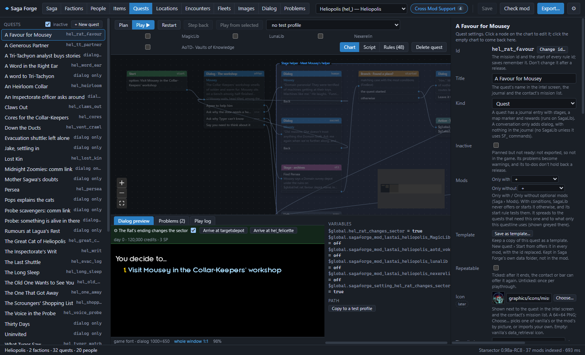
Play mode in A Favour for Mousey: the workshop's options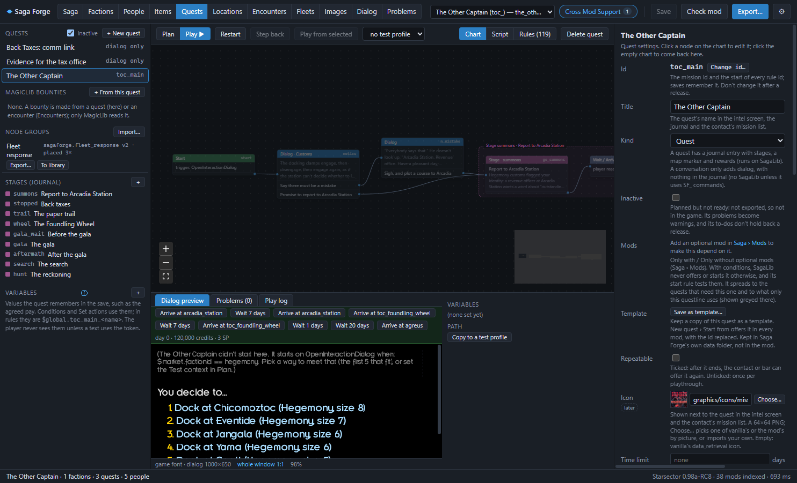
The Other Captain starts at a Hegemony market: Play offers markets that fitOut in space after Leave: travel to the next place, restart or step backThe script and rules views
The Chart / Script / Rules buttons switch the middle of the page:
- Script shows the whole quest as a screenplay in the order the player meets it: speakers, lines, choices and where they lead, journal stages and fleets as notes. Click a line to select its node. Copy as Markdown copies it, for proofreading or sharing.
- Rules lists every
rules.csvrow the quest exports (id, trigger, conditions, script, text, options), and which node each row comes from. Click a row to select its node.

The Problems tab in the dock lists this quest's problems; click one to select its node. See Problems › Fix a problem.
How to set up the basics
Make a contact quest with stages
A quest a character offers through their mission list, with journal stages. Example: Pop Chicken's The Scroungers' Shopping List in Heliopolis.
- + New quest. Type the Title; the Id is made from it with your prefix. Start from an empty quest (or a template: Delivery, Bounty, Investigate a place, Rescue, Talk to someone, or one you saved). Kind Quest. Create.
- The new quest has a Start node, an Offer dialog with Accept the job and Not interested, and one stage. Click the empty chart to open the quest settings.
- How it starts › Start: offered by a contact. Contact: pick the person (see People › Make a character a contact). Fill in Blurb (the line in their mission list) and Option (what the player picks to hear the offer). Set Min. rep and Frequency if you want.
- Under Stages (journal) on the left, open the stage (or + for more) and fill in Title, Journal text, Next-step line and Map marker (a place, see Locations › Add a derelict or wreck).
- Click the Offer node and write its Text; set Speaker and Visual: Person (speaker).
- Drag from Accept the job's dot into empty space and pick Stage: it takes the first stage no Stage node uses yet. Drag on from the Stage node to the next step (a Dialog, an Arrive …).
- Drag from Not interested and pick Link (back to the menu).
- End every path with an End node (success or failure) followed by a Link.
 New quest
New quest A stage's form: journal text, next-step line and map marker
A stage's form: journal text, next-step line and map marker The Scroungers' Shopping List: offer, stage, arrive, branch, action, end, linkThe Offer node with Pop Chicken speaking
The Scroungers' Shopping List: offer, stage, arrive, branch, action, end, linkThe Offer node with Pop Chicken speakingIn game, the quest appears in the contact's mission list. Once accepted it is in the intel screen with the stage's journal text, and the map marker points to the stage's place.
To offer a quest only after another one, use Prerequisites in the quest settings (see also Saga › Make one quest wait for another).
Write a conversation
Dialog without a journal entry, for a scene at a place, a greeting, or a lock on a wreck. Example: Probe: something is alive in there, a short dialog that opens when the player visits Jake's cryo-probe before the quest sends them there.
- + New quest, Kind: Conversation only, Create.
- In the settings, choose How it starts: an option added to a menu (see Start a quest from a dialog option) or a dialog that opens on a trigger. For a dialog at a place: Trigger
OpenInteractionDialogand Conditions$id == <the place's id>. Addscore:N(e.g.score:500) to the first condition line to win over vanilla's own rule for that place. - Write the Offer node's text and options.
- End each path with a Link: back to the menu for an option, close the dialog to end it, or into an existing option id
defaultLeaveto leave a place the vanilla way.

A greeting for a fleet you hail is the same with the trigger OpenCommLink and a condition on the fleet. For an encounter's own fleet, the Encounters page makes this conversation for you (see Encounters › Give a fleet a comm dialog).
Start a quest from a dialog option
Adds your option to an existing menu (a market, a person, a planet) without replacing its own options. Example: The One That Got Away, an option in Butters's menu once he has told his story.
- In the quest settings, How it starts › Start: an option added to a menu.
- Option text: what the player sees in the menu.
- Menu trigger: leave
PopulateOptions(markets, people, fleets, planets). - Shown when: condition lines for where it appears, e.g.
$id == hel_buttersfor one person, or$isPersonfor any person. + add… offers ready-made condition lines. - The Start node now leads to the first thing the player sees after picking the option.
In game, the option is in that place's menu; the menu's own options stay.
Add a random branch
A branch that rolls the dice. Example: Lost Kin, where each cryo-probe the player opens holds kittens, a Gamma pilot, a Beta engineer, an uncollared cat or something odd.
- Add a Branch node and set Picks: at random (by weight).
- Either use the branch's own cases: + Case for each, with a weight (3 against 1 is three times as likely), limits if needed, and Nothing for the chance that nothing happens.
- Or pick a named pool in Pool: its entries become the cases (see Saga › Make a random pool). A pool can be shared by several branches; the inspector shows each case's chance.
- Rolled for: the place or person in the dialog (the same place gives the same result after a reload, and "once per place" counts per place) or the world (one seed for the whole playthrough).
- Connect each case's dot and otherwise to what happens next.
- In Play mode, Next pick forces the next roll, so you can test each case.
 A Random branch on the pool "Who is in the pod", with each case's chancePlay mode: the player wakes whoever is inside, and the roll picks who it is
A Random branch on the pool "Who is in the pod", with each case's chancePlay mode: the player wakes whoever is inside, and the roll picks who it isRandom branches need SagaLib.
Add a fight
There are two ways, depending on where the fight happens.
A battle right here, in the dialog (defences that wake up, guards at a door): a Fight node. Example: the Custodian's defences in Persea.
- Add a Fight node where the battle starts, after the Dialog that sets the scene.
- Set Engage option (the option that starts it), then Ships: the faction and fleet points, exact ships, or a named fleet; and Fleet name.
- Connect Won to what happens after the battle (here the way into the vault). Leave Left unconnected: the dialog closes, as vanilla's does, and the player can come back (an Arrive on the place, as Persea's "retry" does).
In Play mode the green bar asks whether the player won or left. Needs SagaLib 1.4.
A fleet out in the sector that the player meets, beats or avoids: an Encounter node. Example: the scavengers at the probe in The Voice in the Probe.
- Add an Encounter node after the Stage node where the fight belongs.
- Pick the encounter in Encounter, or + New… to create one at the stage's map marker. Set up its fleet on the Encounters page (see Encounters › Add a fleet for a quest).
- Connect after spawning to what happens right away, Defeated to what happens when the player wins, Avoided to what happens when the fleet leaves or the player gets past it.
To let the player talk their way out, give the fleet a comm dialog that ends with the Fleet response group's let them go (see Node groups), or an Action with Encounter leaves; the outcome then counts as Avoided. For a fleet that stops the player and talks first, see Encounters › Make a fleet stop the player.
Wait for the player to arrive
Continues the quest when the player reaches a place.
- Add a Wait / Arrive node after the Stage node. When you add it by dragging from a node, its Place is already the stage's map marker.
- Shows as: an option in the place's menu (type the Option text, e.g. "Ask the bartender about the Gutter Saint"), or takes over the arrival for a scene that must interrupt.
- Text: the first paragraph of the scene. Connect the node to the Dialog that follows.
 The One That Got Away: an Arrive shown as an option in the pirate bar's menuPersea: the Arrive at the vault, before the Custodian hails
The One That Got Away: an Arrive shown as an option in the pirate bar's menuPersea: the Arrive at the vault, before the Custodian hailsAn Arrive at a place guarded by a lock conversation (one that only lets the player leave, such as the probe's in Heliopolis) can only take over: the lock owns its arrival.
Problems warns about an Arrive straight after an Encounter's outcome with no Stage node between them: the arrival could happen before the fight is decided.
In Play mode, the green bar has an Arrive at … button for each Arrive node. To wait for time instead, set Continue: after a number of days.
Send the player to a random place
Lets SagaLib pick the quest's place, so it's different in every game. Example: The One That Got Away, where Butters sends the player to a pirate den to ask about the Gutter Saint.
- Under Variables, + a variable (e.g.
den) and set its type to random target. Its search opens. - Pick: what to look for (e.g. a market).
- Must: criteria that must all hold, e.g. Faction is pirates. + Avoid dangerous systems adds the usual safety criteria. Each criterion has its help text, and the ⓘ opens the reference of every criterion.
- Prefer: criteria tried in order, each dropped when nothing would be left (e.g. Not hidden, then a size).
- Facts and mock: SagaLib stores the place's name, system and distance in variables such as
$global.hel_one_away_den_name, which your texts can use. Play mode can't see a generated sector, so it uses the mock values you type here. - Set the stage's Map marker to
target:denand add an Arrive attarget:den(see Wait for the player to arrive).
 The One That Got Away: the stage and the Arrive both point at target:den
The One That Got Away: the stage and the Arrive both point at target:denWhen the place is picked depends on how the quest starts. A contact or bar event picks it when it offers the quest, so the offer can name it. With any other start (an option, a trigger, …) SagaLib picks it when the quest starts, at its first Stage node: name the place only in texts after that. Problems warns about a text that names it too early, and Play mode shows the token unfilled there, as the game does.
If nothing in the player's sector fits, a contact or bar event doesn't offer the quest then (the contact offers something else); with any other start the quest doesn't start (a Branch on its state after the Stage node can tell the player). Random targets need SagaLib 1.2.
A commodity at a market. Set Pick to a commodity at a market for a delivery job: SagaLib picks a market and one of its goods (vanilla's pickCommodity). Example: The Scroungers' Shopping List, where Pop Chicken asks for something legal that a Heliopolis market needs, preferably one it is short of.
- The market criteria work as above; the commodity's own are: not crew or marines, legal or illegal there, tags, base price, "produces it", "is short of it", "has a surplus", and at least N in stock.
- Which commodities: vanilla's 18 trade goods (the default), any economy commodity, or a list.
- Amount: in economy units (times the commodity's unit size, optionally times the market's size) or a fixed number of cargo units. The form shows what that comes to for a few vanilla goods.
- Texts can use
$global.<quest>_<var>_commodity,_amount,_basePriceand_value, plus the market's tokens. The action The target's goods: take / give moves the cargo, Credits for the target's goods pays for it, the condition has its goods checks the hold, and a reward can add + for goods (a multiple of base price × amount). Problems warns about a delivery without a cargo check. - Play mode uses the mock's commodity (or one of the allowed ones at random) and market size.
Commodity targets need SagaLib 1.4.
Give a reward
- Click the empty chart. Under Rewards, + Reward: give it an id (e.g.
paid) and fill in credits, XP, story points, reputation (+ faction), items (+ item, see Items › Add a quest item) or + random items from a drop group (see Saga › Make a loot table). - Pick the reward in an End node's Reward, or pay it mid-quest with an Action node's Give a reward.
The dialog then shows a "Gained …" line for each part, as vanilla does. A quest can have several rewards; The One That Got Away pays justice or bounty, depending on what the player does with the Gutter Saint. Reputation can go to a faction or to a person (+ person).
Change progress from a dialog
Adds points to one of the mod's progress events (see Saga › Add a progress event). Example: reporting the cats to the Hegemony in A Word in the Right Ear adds to "Hegemony suspicion".
- After the option, add an Action node.
- + add… › Add progress. Pick the event, type the points (negative lowers it) and the text shown in the event's list of one-time factors.

In game, the points show in the progress event's bar in the intel screen. If the event isn't running yet, this starts it. Needs SagaLib 1.2.
Test a quest in Play mode
- Open the quest and press Play ▶. A contact quest starts with the contact's menu: pick the quest's option to hear the offer. A quest whose start doesn't match the Test context offers ways to meet it: pick one.
- Click options in the preview. Use the green bar for encounter outcomes, fights and arrivals. When the dialog closes, pick what happens next from the out-in-space choices (travel, wait, a fleet).
- Pick a test profile in the list next to Play from selected to start with flags, credits or other quests already set (see Saga › Add a test profile), then Restart.
- Step back undoes one step; Play from selected starts at the node you selected.
- Read the Play log when something doesn't show up as you expected.
- Plan goes back to editing.

Play mode can't fight battles, run plugins or roll a drop group's items; it asks you or tells you so in the log. To try the quest in the real game, start it with a test profile (see Saga › Start the game with a test profile).
Rename a stage after a release
Saves remember the player's stage by its id, so changing an id after a release needs care.
- Under Stages (journal), open the stage and press Change id….
- If the stage isn't in a release yet, just type the New id: no saves are affected.
- If it is in the last release, choose:
- Keep the old id as an alias (recommended): players at the old id move to the new one when they load. The old id is added to the stage's Old ids.
- Change it without an alias: players at this stage lose their place.
- Only change the display name: edit the stage's Title instead.
The quest's own id is the same story but stricter: Change id… in the quest settings changes it everywhere in the mod, but players in the middle of the quest lose it after a release. Problems warns you. To release an update safely, see Export › Release an update.

Locations
The places of your mod: new star systems on the hyperspace map, the planets, stations, wrecks and other objects in them, colonies (markets) the player can dock at, and objects you add to systems that already exist (vanilla's or another mod's).
How it works
The page has three columns: the lists on the left, a map in the middle and the selected thing's form on the right. Everything you make here is built in the game by SagaLib when a new game starts (and, if you want, in saves that already exist).
The lists
- This mod's systems: the new star systems of the mod (+ New… makes one). The number is how many objects it has.
- Additions to existing systems: systems that are not yours (Askonia, Corvus, another mod's) where your mod adds objects (Heliopolis adds Lagua's Rest to Tia). Their own planets and stations are never changed.
- This mod's types: your own kinds of station, planet or star, with your own pictures (+ New type…, see Make your own entity type).
- Ailuros: entities (the selected system's name): the objects in that system. + add… adds one. A dot in front of a name means it orbits something other than the star (Research Station Felicette orbits Bastet); the grey text says what kind it is and whether it has a market.
- Existing systems (read-only): the systems of the game and of the mods your mod lists in Saga › Mods, each with a dot in the colour of the faction that owns the most there. Click one to look at it. Show all installed mods (above the map) adds the other mods' systems, and the map, the markets and the type chooser follow the same switch.
The hyperspace map
Hyperspace map shows the whole sector: each system's star as in game (colour and size by type; a black hole black, no star or a nebula an empty circle), a ring in the colour of the faction that owns the most there. Drag your system to place it; the toolbar shows the nearest system and how far it is in light-years ("nearest: Tia 21.6 ly"). Near the core the player finds it easily, at the edge it feels remote. The wheel zooms (labels grow as you zoom in) and dragging the background pans. A dashed outline marks the edge of normal hyperspace.
- Hover a system (anywhere inside its ring): an info box in the corner shows its markets, each in its faction's colour with its size, and stays a few seconds after you move on. Click a market there to open the System view centred on its planet or station.
- Places the game makes in code at a fixed spot are shown too: Limbo and the Tri-Tachyon black site ("Unknown Location"). Places the game puts somewhere new in every game can't be: ⓘ 3 not shown in the toolbar names them.
Click a vanilla system to look inside it. Saga Forge reads how the game builds it and shows its planets and stations, read-only, with Add to this system… on the right (see Add to an existing system). Click one of its planets or stations for its details: its type, what it orbits, and its market with faction, size, industries and conditions. Some vanilla systems are partly made by random generation in the game's code; those parts can't be shown.

The system view
System view draws the selected system from above: the star, the orbits (dashed circles), belts and rings as wide bands, and every object with its name.
- Drag an object to move it along its orbit; hold Shift to change its distance too.
- With the star selected (nothing else picked), round handles on the star change its size and its corona. With a planet selected, a handle changes its size; with a belt or ring, its width.
- Objects that only appear later in a quest are drawn faded.
- Drag empty space to pan; the wheel zooms. Every label has a dark outline, so a name stays readable over a light planet.

The system form
With a system selected (and no object), the right column shows the system itself:
- Name and Hyperspace (its place on the sector map).
- Star: its type (Choose… shows every star type with its picture), Star radius and Corona (flying through the corona costs combat readiness, as near vanilla's stars). No star makes an empty centre lit by a colour of your choice, like vanilla's Tri-Tachyon black site.
- Music: a music id played in the system; empty is the game's default. The ⓘ opens the reference of music and sounds.
- Existing saves: ticked, SagaLib also builds the system when a player loads a save that doesn't have it yet. Unticked, it only appears in new games (the box turns yellow to remind you).
- Removed during quests: objects (yours, vanilla's or another mod's) that disappear for good when a quest reaches a stage: "the station is blown up". An object with a colony is only removed when you choose decivilize for its market, which destroys the colony for good.
The object form
Click an object (in the list or the map) and the right column shows its form. At the top is a picture of its type ("an example of the type; the game may tint or light it differently").

- Name: shown on the map, on hover and in the dialog when the player visits.
- Id: what quests use to point at it (stage markers, Arrive nodes, where fleets spawn). Until the mod is released the id follows the name; Change id… sets your own, and everything in the mod that uses it follows. After a release, change it only if you must: saves remember it.
- Kind (fixed when you add it) and Type: the planet type, or the entity type from the game's
custom_entities.json. The type sets its look and vanilla's own dialog for it: a wreck can be salvaged, a relay hacked. Choose… opens a picker with pictures and filters, and the ⓘ the reference of entity types (their dialog, salvage, defenders and description) or planet types. A derelict's type is the ship it is the wreck of: a variant id (picked from the variant list) orwreckfor a random hull. - Orbits, Orbit radius, Angle, Orbit days: what it circles and how. The help under each field gives vanilla's usual values (planets 2000–10000 from the star, stations 300–600 from their planet).
- Size (planets, moons) or Width (belts, rings).
- Appears: from the start, when a quest reaches a stage, or only when a quest's Action node places it ("Place an object"). It always shows the choice that is stored, even when the quest isn't picked yet. Until then it isn't in the game at all, so the player can't find it early. Replaces makes it take another object's place: a station that becomes a wreck.
- Planets and moons without a market: Conditions (resources, hazards, ruins; the chips show their names, and the ⓘ opens the reference of colony conditions with the planet types that can roll each) and Surveyed (how much the player knows at the start). With ruins, ruins stay unexplored keeps "Explore the ruins" available even in a system with a colony.
- Salvage: + Loot and + Defenders for objects that can be salvaged (see Add a cache with loot and defenders).
- Protection (wrecks only): see Add a derelict or wreck.
- Market (planets, moons, stations): + Add a market makes it a colony (see Add a station with a market).
- Description: the text shown when the player visits it and in its info panel.
What it writes into the mod
data/sagaforge/systems/<system id>.json: the system and its objects, which SagaLib builds in the game (so the mod needs SagaLib).data/strings/descriptions.csv: the descriptions of the objects.data/config/custom_entities.jsonanddata/config/planets.json: your own types, added to the game's lists by key (nothing of vanilla's is replaced).
The plan itself is kept in sagaforge/locations/<system id>.system.json in the mod folder. For the exact format, see SagaLib's format notes.
How to set up the basics
Add a star system
- In This mod's systems, press + New….
- Keep A new star system, type the Name (e.g.
Ailuros). The id is made from it with your mod's prefix (hel_ailuros). - Press Create. The system appears in the middle of the hyperspace map: drag it where you want it, watching the "nearest" hint in the toolbar.
- On the right, pick the star with Choose… and set its radius and corona.
- Tick Existing saves if players should get the system in a game they already started.
In game: the system is on the hyperspace map of every new game (and of loaded saves, with Existing saves), with jump points made automatically.
Add a station with a market
- Select the system, then in the entities list pick + add… › Station. If a planet is selected (or the system has one), the station orbits it; otherwise it orbits the star.
- Give it a Name (e.g.
Research Station Felicette) and, if you like, a different look with Type › Choose… (the Stations filter shows vanilla's station pictures). - Scroll down to Market and press + Add a market.
- Fill in the market: Name, Faction (who owns it: its flag, patrols, prices and who may dock), Size (population 1–10; vanilla colonies are 3–8), Free port, Never decivilises for a colony a quest needs to keep, and Protect from invasion for a place the story can't lose (Nexerelin never invades it, the player's invasions included; without Nexerelin it does nothing).
- Add Conditions, Industries (population, spaceport, military base, orbital station…) and Submarkets (open market, black market, military market, storage) with the + add boxes. The chips show names; the ⓘ next to each opens its reference.
- Under People at this market, add the characters who live there (see People › Place a character at a market). The list and the person's placement on the People page stay in step.
- Write a Description at the bottom: the text the player reads when docking.
In game: a colony the player can dock at and trade with, listed in the intel screen, with its people in the comm directory.
Add a planet
- Select the system, then + add… › Planet (or Moon, which orbits the selected or first planet).
- Name it and press Type › Choose…. The picker sorts the planet types by how likely vanilla's random generation puts each one at this orbit and marks those as "fits here"; Fits here only hides the others. Any type can be used.
- Drag it on its orbit in the system view, or type the Orbit radius, Angle and Size.
- For an uncolonised planet, add Conditions (ore, ruins, hazards) and choose Surveyed. For a colony, add a market as in Add a station with a market.

In game: the planet orbits the star with its conditions in the planet info; an uncolonised one can be surveyed as usual.
Add a derelict or wreck
- Select the system, then + add… › Derelict / wreck.
- Name it (e.g.
Evacuation shuttle) and place it. Its Type is the ship it is the wreck of: pick a variant (heremudskipper_Standard), or keepwreckfor a random hull. Either way it gets vanilla's derelict ship dialog (salvage, ship recovery). - If a quest sends the player to it, look at Protection further down the form: salvaging or recovering a wreck removes it, and then the quest can't go on. Pick until "<quest> succeeds" and press Protect this wreck. Saga Forge adds a short conversation at the wreck (just "Leave") and opens it on the Quests page; the quest's Arrive nodes there take over the arrival by themselves, and once the quest succeeds vanilla's wreck dialog is back (see Quests › Write a conversation).
 The Evacuation shuttle: a derelict MudskipperIts Protection: guarded by the conversation "Evacuation shuttle: left alone"
The Evacuation shuttle: a derelict MudskipperIts Protection: guarded by the conversation "Evacuation shuttle: left alone"In game: a derelict on the map. Vanilla's own wreck dialog handles it unless your quests answer first.
Add a cache with loot and defenders
- Select the system, then + add… › Other custom entity.
- Type › Choose… and pick a salvageable type, e.g. Supply Cache (
supply_cache); the Salvageable filter shows them. - In Salvage, press + Loot. Pick a drop group: one of your mod's loot tables (see Saga › Make a loot table) or a vanilla group such as
rare_tech. Set rolls (random picks from the group) or value (credits' worth of the group's items). You can add several lines. - Press + Defenders, pick the faction that guards it, the fleet strength range (a derelict usually 10–30) and the chance that there are defenders at all.
 The Scavenger stash near Kythera I, a supply cacheIts Salvage: two rolls of the cryo-probe loot and three of vanilla's basic group, pirate defenders 10–20 at a 0.5 chance
The Scavenger stash near Kythera I, a supply cacheIts Salvage: two rolls of the cryo-probe loot and three of vanilla's basic group, pirate defenders 10–20 at a 0.5 chance Choosing an entity type
Choosing an entity typeIn game: when the player salvages it, a guard fleet may have to be beaten first, and the loot is rolled from the groups you chose. Needs SagaLib 1.2. To scatter many such caches across the sector instead of placing one, see Saga › Scatter objects across the sector.
Add to an existing system
- On the Hyperspace map, click the system (e.g. Askonia) to look at it, then press Add to this system…. Or press + New…, choose Additions to an existing system and pick the system.
- The system appears under Additions to existing systems. Add objects with + add… as in your own systems. In Orbits you can also pick the system's own planets and stations, under "<system>'s own bodies (vanilla)".
 Adding to an existing systemThe Other Captain puts its orphanage station, the Foundling Wheel, into vanilla's Arcadia
Adding to an existing systemThe Other Captain puts its orphanage station, the Foundling Wheel, into vanilla's ArcadiaIn game: your objects appear in that system in new games and, on load, in saves that don't have them yet. SagaLib adds each one only if it isn't there already and never changes what the system already has.
Make your own entity type
- In This mod's types, press + New type….
- Choose A station or other object, A planet type or A star type, and type a Name. The id gets your prefix.
- Press Create. The type's form opens on the right:
- A station or object starts as a copy of vanilla's side station. Set Behaves like (the vanilla type it inherits everything else from, e.g. a derelict so it can be salvaged), its Sprite (cropped to 160×160 like vanilla's stations), Drawn size, Radius, and optionally a Map icon and an interaction Picture.
- A planet or star type starts as a copy of vanilla's barren planet or yellow star. Set Based on (whose tilt, atmosphere and colours it copies) and its Texture (1024×512). Pictures are picked or imported as in Images › Pick an image for a field.
- Use it: pick it in an object's Type › Choose…; your own types are listed there with the game's.
 The New type dialog
The New type dialog The Domain cryo-probe, an entity type of Heliopolis's own that behaves like vanilla's derelict probe
The Domain cryo-probe, an entity type of Heliopolis's own that behaves like vanilla's derelict probeIn game: your type is added to the game's custom_entities.json or planets.json, so it works like a vanilla type (and other mods can use it too).
Encounters
Fleets your mod puts in the sector: the scavengers waiting for the player in a quest, a patrol that is there from the start, a fleet that turns up when the player comes near, a fleet that stops the player and talks first, or traders that travel between two places by themselves.
How it works
On the left is the list of the mod's encounters (with their faction and size); + New makes one, and the inactive box shows or hides encounters marked Inactive. The selected encounter's form is on the right, in boxes. The header has its name and id, Inactive and Delete. Every encounter is run by SagaLib in the game (the SagaLib badge in the header).
Inactive keeps an encounter in the editor without exporting it, for a draft. An encounter whose named fleet is inactive isn't exported either, and pools leave both out. Problems lists what still uses it: an Encounter node, a Spawn or Leaves action, a Fight node or a bounty is an error, a pool entry a warning.
Fleet
What the fleet is:
- Name: for the editor only (lists, Encounter nodes). The player sees the Fleet name.
- Faction: whose fleet it is: its ships, colours, officers and comm greeting.
- Fleet type: an id such as
patrolMediumorsmallTrader. It gives the fleet its default name (the faction's name for that type), and some vanilla code checks it. You can type your own id and name it (see Fleets › Name fleet types). The ⓘ opens the reference of fleet types. - Ships, one of three ways:
- from the faction's doctrine (fleet points): the faction builds it the way it builds its own fleets; Fleet points sets how big (a frigate costs a few, a capital ship 20 or more). Size scaled by lets one of the mod's settings, such as a difficulty, multiply the points when the fleet spawns (see Saga › Settings).
- exact variants: a list of variant ids; the first is the flagship.
- a named fleet: one of the mod's named fleets from the Fleets page, with the same ships, names and captain every time (see Use a named fleet).
- Plus random ships (with exact variants or a named fleet): fleet points drawn the way the faction builds its own fleets, different every spawn; the ships above always come too.
- Extra groups: ships that may join when the fleet spawns. Each group has a chance and adds all its ships or 1 of these (or more), drawn by weight. + ships of a named fleet… adds a named fleet's ships to a group (a copy you can then edit). Every spawn rolls them again: a 30% chance of two heavy escorts, always one of a Condor or a Drover.
- Quality: 0 to 1, the ships' condition (lower means more D-mods). Empty: the faction's own.
- Flagship by: one of the mod's people commands the flagship, so hailing the fleet talks to them. Empty: a generated officer.
- Fleet name: shown on the map and when the player meets it. Empty: the faction's name for the fleet type.
Only the fields of the Ships choice you picked count: switch from fleet points to a named fleet and the old faction, type and points are kept for switching back, but Problems, Export and the lists use the named fleet's. Plus random ships and extra groups need SagaLib 1.4.
The small later button under some field names (At, Flagship by) marks the field "Set later" when you don't know the answer yet: it shows ✎ to do and is listed under To do on the Problems page until you fill it in (see Problems › Mark a field Set later).
Spawn and behavior
Where and when it appears, and what it does:
- At: the object it appears next to. The list has your systems' objects, the game's markets, and the random targets of your quests. Under the field, Where the quest sends the player offers the places the quests that spawn it mark on the map: one click sets it. SagaLib puts the fleet beside the stage's marker when they share a system, and on the band of an asteroid belt (not at the star in its middle).
- When:
- when something spawns it (quest, event, etc.): an Encounter node, a Spawn action in a quest, a world event or a progress stage, or another encounter's outcome. Spawned by lists them all, each a link. Or pick a Quest and At stage to spawn it whenever that stage starts (leave it on "(only by what spawns it)" otherwise). Leaves when the stage ends: the fleet flies off and disappears when the quest moves on.
- once, on a new game.
- kept alive, respawning: a new one appears Respawn after so many days once it is gone.
- when the player comes near: once the player's fleet is within Range of the place (0 = anywhere in its system). Only during limits it to a quest stage.
- roaming between two places: see Add a roaming fleet.
- Behavior: ambush (waits at its spot and attacks the player who comes close), guard the place, patrol the system, intercept the player, or travel somewhere (then disappears). The ⓘ opens the reference of spawn modes and behaviours.
- Flags: hostile to the player (attacks regardless of reputation), no reputation loss for fighting it, important (a marker on the map), player may disengage.
Comm-link dialog
What the player hears when hailing the fleet. Without one, the fleet uses its faction's vanilla greeting. + Create a comm-link dialog makes a conversation for this fleet only and opens it on the Quests page; other fleets of the same faction keep vanilla's greetings. Unlink drops it (the conversation stays on the Quests page). If the conversation was deleted on the Quests page, the box says so in red, with Unlink and Create a new one.
Hail
Hails the player when it reaches them: the fleet stops the player and its comm-link dialog opens before the fleet screen (Engage, Leave), the way vanilla's interceptions do (the Knights of Ludd's stop, a customs patrol). Create the comm-link dialog first.
- First lines: shown on the fleet screen before the comm link opens ("You're being hailed by the Hegemony patrol."). $ Tokens helps with the names (see Quests › Tokens).
- Fleet description: vanilla's description of the fleet first (its size and strength), as vanilla's own hails do.
- Leaving: blocked until the dialog lets them go: the player can't leave until the comm-link dialog ends with the Fleet response node group's let them go or player flees; otherwise the fight is all that's left. Turn player may disengage off under Flags, or vanilla lets them leave anyway (a player much stronger than the fleet still can, as in vanilla).
End the comm-link dialog's branches with Fleet response (see Quests › Node groups): let them go (the fleet leaves; avoided), fight, or the player flees (the fleet chases, and its next hail can test "The player fled from this fleet"). The hail is exported as vanilla's interception, once per meeting; Problems warns about a hail without a comm-link dialog, a blocking hail with player may disengage on, and a "cut the comm link" outside a fleet's comm-link dialog.
Outcomes
What happens when its fleet is beaten, or leaves without being beaten (let go, talked away, despawned):
- When defeated and When avoided: actions, the same as a progress stage's (flags, progress, credits, reputation, spawn another encounter …). They run whoever spawned the fleet: a quest, a progress stage, a world event or a new game. In The Other Captain, the Warrant Patrol and the Hegemony Manhunt set
toc_fought_hegemonywhen beaten, which the Hegemony Warrant counts. - In the quests that spawn it: the quests with an Encounter node for it, and whether each goes on when the fleet is Defeated and when it is Avoided (green "→ continues", or red "(not set)"). Click the quest to open the node. They run after the actions above.
Conditions can test how it went: Encounter … its fleet was beaten / left unbeaten, and Named fleet … beaten at least once. Problems points to When defeated when a flag that sounds like a fight is read but never set. In Play mode, picking an outcome runs these actions. Needs SagaLib 1.4.
What it writes into the mod
data/sagaforge/encounters/<id>.json: the fleet, where and when it spawns, its behaviour, flags and outcome actions. SagaLib spawns it in the game.- The comm-link dialog (and the hail) is a conversation of the mod, written into
data/campaign/rules.csvwith the mod's other dialog.
The plan is kept in sagaforge/encounters/<id>.encounter.json. Details: SagaLib's format notes.
How to set up the basics
Add a fleet for a quest
The usual way is from the quest itself: on the quest's flow chart, add an Encounter node and press + New… next to its Encounter field. It makes an encounter at the place the quest marks for its current stage. (See Quests › Add a fight for the quest's side.) Then come here to set the fleet up:
- Select the encounter in the list (here Probe scavengers).
- In Fleet, pick the Faction (
pirates) and a Fleet type (scavengerMedium), keep from the faction's doctrine and set Fleet points; give it a Fleet name. - In Spawn and behavior, check At: click one of the Where the quest sends the player buttons (here the cryo-probe). Keep when something spawns it (quest, event, etc.).
- Tick Leaves when the stage ends if the fleet should give up once the quest moves on.
- Choose ambush (wait aggressively) and the flags: hostile, important, player may disengage.
- Look at Outcomes: both Defeated and Avoided should say "→ continues".
In game: when the quest reaches the Encounter node, the scavengers appear at the probe with a marker on the map. Beating them, or making them leave, moves the quest on.
To make one without a quest first: + New at the top of the list, type a Name, Create, and fill in the form as above.
Give a fleet a comm dialog
- Select the encounter and press + Create a comm-link dialog (in the Comm-link dialog box).
- Saga Forge makes a conversation called "<encounter>: comm link" and opens it on the Quests page. It starts on the trigger
OpenCommLink, with a condition that it only answers this fleet. - Write the greeting and the options as for any conversation (see Quests › Write a conversation). To let the player talk the fleet away, end the option with the Fleet response group's let them go, or an Action with Encounter leaves: the fleet flies off, and the quest that spawned it takes its Avoided exit. End a branch that just finishes the talk with a Link › close the dialog.

In game: hailing the scavengers shows your greeting instead of the pirates' usual one.
Make a fleet stop the player
A fleet that intercepts the player and talks before anything else: a customs stop, a tax collector, bounty hunters with a message. Example: Back Taxes in The Other Captain, where a Hegemony tax collector stops the player over taxes owed under their name.
- Make the encounter with intercept the player as its Behavior (or ambush), and untick player may disengage under Flags.
- + Create a comm-link dialog, then in Hail tick Hails the player when it reaches them. Write the First lines, keep Fleet description, and keep Leaving: blocked until the dialog lets them go.
- On the Quests page, write the dialog. End each branch with + Node › Node groups › Fleet response and pick its Response: let them go (paid, talked down), fight, or player flees.
- In the quest that spawns it, connect the Encounter node's Avoided (let go) and Defeated exits. A Branch on a flag the dialog set (paid, bluffed, fought) tells the ways apart.
- Test it in Play mode: once the fleet is spawned and the dialog closes, out in space offers Let <fleet> catch you, which opens its hail.
In game: the fleet comes for the player, the fleet screen shows the first lines, and the comm link opens by itself; the player can only leave once the dialog lets them. Needs SagaLib 1.4.
Spawn a fleet at new game
- + New, name the encounter (e.g.
Felicette home guard), Create. - Set up its ships (fleet points, exact variants or a named fleet) and Faction.
- Set At to the place it starts at (e.g. Research Station Felicette) and When to once, on a new game.
- Choose patrol the system or guard the place, and untick hostile for a friendly fleet.

In game: the fleet is there from the start of a new game. Pick kept alive, respawning instead if a new one should come back some days after it is destroyed.
A fleet that only turns up when the player comes near works the same way with When: when the player comes near (Heliopolis's Prowler picket waits at the Ailuros jump-point and intercepts the player anywhere in the system).
Add a roaming fleet
- + New, name it (e.g.
Scrounger caravan), Create. - Set the Faction, a Fleet type such as
smallTrader, and its ships. - Set At to where it leaves from (Research Station Felicette) and When to roaming between two places.
- Fill in Travels to (Lagua's Rest), Leaves every (days between departures on average), At most (how many are on the way at once), Stays (days at the destination) and Round trip (comes back afterwards, like vanilla's traders).

In game: the fleets travel on vanilla's routes like traders and patrols. A route moves along by itself and is a real fleet only while the player is near (within about 1.6 light-years), so many roaming fleets cost little. Behaviour and outcomes don't apply to roaming fleets. Needs SagaLib 1.2.
Use a named fleet
A named fleet has the same ships, ship names and captain every time (made on the Fleets page, see Fleets › Make a named fleet).
- Select or make the encounter.
- Set Ships to a named fleet and pick it under Named fleet. Faction, fleet type, quality, flagship and fleet name now come from the named fleet, so those fields disappear; Open jumps to it.
- Optional: add Plus random ships or Extra groups, so the fleet isn't the same every time.
- Set At, When and Behavior as for any encounter.
Problems reports a named fleet that is missing, has no ships, or has no fleet type. In game: the fleet appears at full strength with its own ship names and its captain in command of the flagship. Needs SagaLib 1.1 (1.4 with random ships or extra groups).
Fleets
Named fleets (the same ships, ship names and captain every time they appear), the names of fleet types, a preview of what a faction's doctrine builds, and Nexerelin's new-game fleets.
How it works
The left column has three lists, four with Nexerelin: Named fleets (+ New… makes one, + Copy… copies the selected one, and the inactive box shows or hides inactive ones), Fleet type names, Doctrine preview (one entry per faction your mod adds or changes) and New-game fleets (Nexerelin). The middle shows the one you picked.
Named fleets
A named fleet is a fixed fleet: a story fleet the player meets again and again, always at full strength. On its own it does nothing in the game: an encounter brings it into the sector (see Encounters › Use a named fleet).
- Fleet name: its name on the map ("Butters's Prowl"). Empty: the faction's name for its fleet type.
- Faction: whose fleet it is: its flag, its relations and the player's reputation when fighting it.
- Fleet type: vanilla's or your own fleet type id. It names the fleet when the name is empty, and some vanilla code checks it.
- Captain: one of the mod's people commands the flagship; their portrait and name show when the player hails or fights it. When defeated › the captain dies: by default the captain survives a defeat and commands the fleet again next time; ticked, the captain dies with the fleet and is gone for good.
- Ships: one row per ship, with its Variant (from the game, the installed mods and Ship Editor; each shown with its hull and variant name), an optional Ship name (written without the faction's prefix; the game adds it, "CAT Thirty Days") and the Flag button for the flagship, which the captain commands. The variant list shows only <faction>'s ships (the hulls the fleet's faction knows) by default; untick it, or use the list's +N, for the rest.
- + From a faction's fleet… gives a starting list of ships as that faction's own fleets would have them: pick a Faction, a Kind (patrol, raiders, carriers, phase, trade convoy, civilian) and a Size, and the ships are drawn by vanilla's ship roles and weights from the hulls the faction knows (Reroll for another draw). Add puts them after the list, Replace the ships instead of it; then edit them like any others.
- Used by: the encounters that spawn it.
The header bar has the fleet's name and id, Inactive (kept in the editor, not exported; nor are the encounters that use it, and Problems lists them) and Delete.
Every defeat of the fleet is counted in the game ($global.sagaforge_fleet_<id>_defeats, shown at the top of the form), so a quest can check how often the player has beaten it.
Fleet type names
For every faction lists fleet types and the name a fleet of that type gets when its faction doesn't name the type itself. Use it for your own fleet type ids, so every faction's fleets of that type have a name. (A single faction's own names are on its Names tab, see Factions › The faction tabs.)
Doctrine preview
Pick a faction to see what its doctrine (Factions › Doctrine) builds: the share of warships, carriers and phase ships, the chance of combat freighters, how many frigates, destroyers, cruisers and capitals one round of building a fleet makes, and the officer, ship quality and number of ships trade-off (vanilla's factions keep the total at 7). It uses vanilla's own numbers; the game adds randomness on top, so a real fleet varies. Edit the doctrine (Factions › Doctrine) jumps to the faction.
New-game fleets (Nexerelin)
Shown when your mod lists Nexerelin in Saga › Mods. These are the ready-made fleets on Nexerelin's new-game fleet choice (Frigate (classic), Combat (small), …, Super ship), where the player picks what to start with. The list has:
- Player (free start, own faction): Nexerelin's player faction, used by free start and own faction. Your fleets are added after Nexerelin's own (Frigate 1/5 becomes 1/6). Nexerelin's can't be removed, and yours show for every player of your mod, whether or not they join one of your factions.
- Each of your factions with a Nexerelin config (Factions › Nexerelin): the fleets offered when the player joins it at the start.
For each type, a fleet is a list of ship variants; a type with several fleets gets < > in game, and a type with none isn't offered. Nexerelin's Custom button (a fleet built from the faction's known ships) is always there too.
What it writes into the mod
- A named fleet is written into each encounter that uses it, in
data/sagaforge/encounters/<encounter id>.json(its variants, ship names, flagship and captain). Needs SagaLib 1.1. - Fleet type names go into
data/world/factions/default_fleet_type_names.json, merged with vanilla's by key. - New-game fleets go into the Nexerelin configs: a faction's into its
data/config/exerelinFactionConfig/<id>.json, the player faction's intodata/config/exerelinFactionConfig/player.json(only the fleet lists; the game merges it into Nexerelin's own). Only Nexerelin reads them.
The plan is kept in sagaforge/fleets.json (new-game fleets: sagaforge/nexerelin.json).
How to set up the basics
Make a named fleet
- In Named fleets, press + New…, type the Name (e.g.
Tax Collector) and press Create. The id gets your prefix (toc_tax_collector). - Pick the Faction and a Fleet type (
patrolMedium). - Pick a Captain if one of your characters commands it (see People › Add a character), and decide whether the captain dies when the fleet is beaten.
- Press + From a faction's fleet… for a starting list (a medium Hegemony patrol, say) and Add it, or + Ship for each ship and type or pick its Variant (
enforcer_Assault,hammerhead_Balanced…). Give the important ones a Ship name, and click Flag on the flagship. - Bring it into the game with an encounter: see Encounters › Use a named fleet. Used by then lists it.

In game: wherever its encounter spawns it, the player meets the same ships with the same flagship and captain (in The Other Captain, Anselm Varro on the hound the tax collector flies).
For several similar fleets, select one and press + Copy…: the copy has everything, under a new name and id. To keep a draft out of the game, tick Inactive.
Name fleet types
- In Fleet type names, click For every faction.
- In the last row, type or pick a fleet type id: one of vanilla's, or your own (e.g. an id you typed as Fleet type of an encounter, such as Heliopolis's
hel_picket). - Type its Name (e.g.
Prowler Picket). Game's name shows the name the game already has for it, if any. ✕ removes a row.
In game: fleets of that type that have no name of their own, and whose faction doesn't name the type, are called by this name on the map.
Add new-game fleets (Nexerelin)
- In New-game fleets (Nexerelin), click Player (free start, own faction) or one of your factions.
- In the last row, pick a type (e.g. Frigate (classic)) and type or pick the first ship's variant. That makes a new fleet of that type.
- + variant… adds ships to a fleet, + another … fleet adds a second choice of that type, ✕ removes a ship and ✕ fleet a whole fleet.
- Export.
In game: with Nexerelin, the fleet choice of a new game offers your fleets: for free start and own faction after Nexerelin's own, and for your faction when the player joins it.
Images
The mod's own pictures: faction flags and crests, portraits, item and quest icons, dialog illustrations, and the sprites and textures of the mod's own station and planet types. Images are brought in here (or from any image field) at the size vanilla uses, and picked by their picture.
How it works
Images live in the mod's graphics/ folders, as vanilla's do. Saga Forge doesn't keep a list of them: what is in the folder is what the mod has. New images are only written into the mod when you Save.
The kinds
The list on the left is the kinds of image a mod uses, each with vanilla's size:
| Kind | Size | Folder | Used for |
|---|---|---|---|
| Faction flag | 410×256 | graphics/factions | The flag on the faction's colonies, fleets and intel page |
| Faction crest | 256×256 | graphics/factions | The emblem in the intel tab and dialog faction panels |
| Portrait | 128×128 | graphics/portraits | A person in dialog and the comm directory; a faction's portrait pool |
| Item icon | 80×80 | graphics/icons/cargo | An item in the cargo grid and its tooltip |
| Quest icon | 64×64 | graphics/icons/missions | A quest in the intel screen and the contact's mission list |
| Illustration | 480×300 | graphics/illustrations | The picture on the right of a dialog |
| Station / entity sprite | 160×160 | graphics/stations | A station or object of the mod's own entity types, on the campaign map |
| Map icon | 64×64 | graphics/icons/map | The small map icon of the mod's own entity type (optional) |
| Planet / star texture | 1024×512 | graphics/planets | The surface of the mod's own planet or star type |
| Mod icon (LunaLib menu) | 40×40 | graphics/icons/mod | The mod's icon in LunaLib's settings menu (Saga › Settings) |
| Achievement image (MagicLib) | 64×64 | graphics/icons/achievements | An unlocked achievement (Saga › Achievements) |
| Tech icon (Vaults of Knowledge) | 320×320 | graphics/icons/tech | A research tech (Saga › Research) |
| Original (not in the game) | as it is | sagaforge/originals | Your source pictures, kept as they are (see Originals) |
Flags and crests share one folder: a file whose name contains crest counts as a crest.
The image grid
Picking a kind shows the mod's images of that kind as thumbnails, with each file's name and size. An image waiting for Save says so. When images aren't at vanilla's size, a note above the grid says how many (the game shows them scaled); import them again to fix it.
 Heliopolis's portraits, in groups: Named cats and the Alpha, Beta and Gamma collarsHeliopolis's illustrations
Heliopolis's portraits, in groups: Named cats and the Alpha, Beta and Gamma collarsHeliopolis's illustrationsGroups (under the kinds) sort a kind's images for you: + Group makes one (rename or delete it there), All and In no group show the rest, each with a count. Click thumbnails to select them (Select all shown, Clear), then Add to group… or Remove from group; each thumbnail shows its groups. The image pickers on the other tabs can show one group. Groups are only for you: they are kept in sagaforge/project.json and never exported.
Delete… deletes the selected images. It asks first and lists where each one is used; the files are removed (and backed up to sagaforge/backups) when you Save.
Illustrations are used by a key, not by their path: on Export, Saga Forge registers each of the mod's illustrations under its file name in the mod's data/config/settings.json (hel_probe_cryo for graphics/illustrations/hel_probe_cryo.png), which is how vanilla's dialog finds them. A Dialog node's illustration can have a second picture for a female player (see Quests › Node types, Dialog › Visual).
Pictures of another Saga Forge mod. Illustration keys are global, as vanilla's are, so your mod can use another mod's pictures (an image library mod, listed as required). The other mod must have exported them: until then the game doesn't know the keys, and the warning names the mod and says to export it.
Import
Import… (top right) brings your own pictures into the mod. It takes single files or a whole folder, and for each one:
- names it from its Name with the mod's prefix (
hel_…) in the kind's folder (flags get_flagand crests_crestat the end if their names don't say so); Saved as shows the path; - lets you crop it to the kind's shape: drag the frame to choose what to keep, drag its corner to resize it. An image that already has the right shape is only resized. When the part you keep is smaller than the kind's size, the frame turns red and the result says (enlarged): it will look blurrier, so use a bigger frame or a bigger source;
- resizes it to vanilla's size and saves it as a PNG.
Preview background (black, grey or checkers) is only for looking: transparent parts stay transparent in the file. A click outside the dialog doesn't close it; Cancel or Esc does.
If a file with that name is in the mod already, it is marked exists and you can tick replace the file already in the mod (the old one goes to sagaforge/backups).
Originals
The kind Original (not in the game) keeps your source pictures as they are: not cropped, not resized, in their own format (a JPG stays a JPG), only renamed with your prefix, in sagaforge/originals/, which the game never loads. + From Originals… in the import dialog (for any kind) picks one of them and makes a cropped, resized copy for that kind; the original stays. Export can put the originals into the release zip (with the original images, off by default; see Export and Release).
The image picker
Every image field on the other tabs (a faction's logo, a person's portrait, an item's icon …) has Choose…. It opens a picker with the pictures of that kind: the mod's own first (marked this mod), then vanilla's and those of the mods your mod lists (marked with where they come from). Type in Filter by name or source… to narrow the list, pick one of your groups, click one to use it, or press Import… to bring in a new one (it goes straight to the file dialog and then the crop step).
Picking another mod's image only writes its path into your mod; nothing is copied. The game finds that picture only while the other mod is enabled too, so use vanilla's images or your own unless your mod needs that mod anyway.
How to set up the basics
Import images
Make the pictures first, in any size: Saga Forge crops and resizes them.
- Open Images and pick the kind on the left (for example Portrait).
- Import…. Check the Kind (it says the size and folder), then + Files… to pick one or more files, + A folder… for every image in a folder, or + From Originals… for your originals. To keep the source pictures themselves, import them first with the kind Original (not in the game).
Import images, before choosing files
- For each file in the list on the left: check its Name (change it if you like; Saved as shows the path), and drag the crop frame if the picture has another shape. Result shows what the game will show; a red frame means it will be enlarged. Leave this one out drops a file.
- Import (the button counts the files). The new images show in the grid as waiting for Save.
- Save (Ctrl+S) copies them into the mod.
- Optional: select them in the grid and Add to group…, to find them again in the pickers.
You can also import straight from a field: Choose… › Import… does the same and fills in the field with the new image.
Pick an image for a field
- On the tab you are editing, find the image field (Factions › Identity › Logo (flag) or Crest, People › portrait, Items › Icon, a Dialog node's illustration, and so on).
- Choose… opens the picker for that kind, with its size in the title.
- Click the picture you want. The field shows its path and a preview.
- Not there yet? Import… in the picker, pick your file, crop it, Import: it is used at once.
- Save. An image from outside the mod is copied in now.
For a portrait the People tab also has its own way to pick one (see People › Use your own portrait).
Dialog
A browser for every dialog rule of the game and the installed mods: search them, see a conversation as a chart, read a rule's conditions and script, and click through it in the dialog preview. It is read-only: you look things up here, and build your own dialog on the Quests tab.
How it works
Starsector's campaign dialog is made of rules (rows of data/campaign/rules.csv). Each rule has a trigger (when it is checked: OpenInteractionDialog, OpenCommLink, PopulateOptions, DialogOptionSelected …), conditions, a script (what it does), the text it shows and the options it adds. When a trigger fires, the game picks the matching rule with the highest score. Saga Forge reads all of them, from the game and every installed mod, including mods that list extra rule files.

Search
The box at the top left searches rule ids, triggers, option ids and text (gaData, rao, a trigger like OpenCommLink). Under it: how many rules were read from how many sources, and how many match (the first 300 are listed). Each result shows the rule id, its trigger and the mod it comes from (vanilla for the base game).
The chart
Picking a rule draws its conversation: the rule, the rules its options lead to and the rules that lead to it, as cards joined by lines. Each card shows the trigger, the rule id, its conditions, the start of its text and its options. Click a card to pick that rule. Triggers that would fire far too many rules to draw (such as PopulateOptions) are named under the chart instead (Also fires: …).
The rule
The panel on the right shows the picked rule exactly as written: where it comes from (mod, file and line), Trigger, Conditions, Script, Text, Options and its Score. This is what you copy when your own dialog has to fit in next to it. The ⓘ in the rule's panel opens the reference of triggers, rule commands, memory keys and text tokens. The preview below the chart, like Play mode, runs only the rules of vanilla, your mod and the mods it lists in Saga › Mods.
A mod made with Saga Forge that exports translatable dialog keeps tokens ($sft-…) in its rules.csv and its texts in data/sagaforge/text.json; the browser shows the texts, as the game does with SagaLib.
Dialog preview and Test context
Under the chart, Dialog preview draws the rule the way the game shows it, with the game's own fonts and colors. Click an option in the preview to play on; Restart starts over; Log lists what happened (which rules fired, what was set).
Test context on the right fills in what the preview needs: the player's name and gender, who they talk to (a person id), the faction, the place (a colony, its bar, a planet with ruins, a derelict …), credits, story points, and values for memory keys the rule checks. It is only for the preview and is never exported. When a rule's conditions don't hold with the current Test context, the preview says which ones (conditions not met with this Test context). People with a Presence rule (People tab) get a "<name> is away" switch under People away.
SF_FactionRep <faction A> <faction B> <level> (SagaLib 1.3) tests how two factions stand with each other, for example SF_FactionRep $faction.id hegemony NEUTRAL: the owner of the market you're at is at least Neutral with the Hegemony (vanilla's RepIsAtWorst is the player's standing). Levels are Vengeful … Cooperative, or notHostile. The preview knows the relations your mod sets on the Factions tab; for other pairs it asks under Conditions the editor can't evaluate.
The same preview and Test context are on the Quests tab, where they play your own quests (see Quests › Test a quest in Play mode). Rules your own mod exported with translatable texts show their text as tokens ($sft-…) here, because SagaLib fills them in only in game; play your own quests on the Quests tab instead.
How to set up the basics
Find a vanilla dialog rule
For example, how the Hegemony greets a friendly player over the comm link:
- Open Dialog and type in the search box: a trigger (
OpenCommLink), part of a rule id (greetingHegemony), an option id, or words from the text. - Pick a rule in the list: here
greetingHegemonyFriendly. - Read the panel on the right: it fires on
OpenCommLinkwhen$faction.id == hegemonyand$faction.friendlyToPlayer; its text has three variants (OR), one picked at random; its script sets$menuStateand firesPopulateOptionsto add the comm menu's options. - Look at the chart to see what leads to it and where its options go. Click a card to follow the conversation.
- In Dialog preview, click the options to play through. If the preview says conditions are not met, set the missing values in Test context (here the speaker's faction).
Hook into vanilla dialog
Your mod adds to vanilla's dialog; it doesn't edit vanilla's rules. Use the Dialog browser to find the place you want to join, then build the hook on the Quests tab:
- Find the vanilla rule where your content should appear (see Find a vanilla dialog rule). Note its trigger and the conditions that make it fire there. For example a planet's or station's main menu is built on
PopulateOptions, with conditions on$id(which place) or$market.id. - On the Quests tab, start your quest or conversation from that place: an option in that menu, a trigger, or an interjection, with the same kind of conditions (see Quests › Start a quest from a dialog option). Use your own place's or market's id in the conditions so your option only shows up there.
- To go back into vanilla's dialog at the end of your conversation (back to the menu, or into a vanilla option), use a Link node on your quest's chart (see Quests › Write a conversation).
- Check mod and the Export… dialog warn if one of your rules would take over vanilla's dialog everywhere: a rule on a trigger where the game picks one rule (
FireBest), with vanilla's conditions plus more, but nothing about your own content. Add a condition with your prefix (your person, place or flag) and it only fires where you meant (see Export and Release › Export the mod).
Problems
Everything in the mod that is wrong, risky or not finished yet, in one list, with a fix button where Saga Forge knows the fix. Errors block Export; everything else is advice.
How it works
Saga Forge checks the active mod all the time while you edit: a missing link on a quest's chart, a condition that reads a flag nothing sets, an id without the mod's prefix, a person placed at a market that doesn't exist. The Problems tab in the header shows how many errors there are, a ✎ count of to-dos, and, when there are no errors, how many warnings.
Some of the checks, to give an idea of what they cover: content of an installed mod your mod doesn't list in Saga › Mods (factions, items, conditions, industries, submarkets, hullmods, drop groups); a condition outside a dialog that can never be true ($person in a world event); a token that isn't filled where it is used (market tokens in a comm link); an Arrive straight after an Encounter's outcome; an option label that ends in a quote mark (the game drops it); a Plugin node whose class isn't in the mod's jars; an inactive encounter or named fleet something still uses; a version for a setting that isn't marked for versions; a hail without a comm-link dialog.

The levels
The checkboxes across the top show or hide each level, with how many there are:
| Level | What it means |
|---|---|
| ! Errors | Something the game would trip over: a missing target, a broken reference, an id another mod uses. Export is blocked until they are fixed. |
| ✎ To do | Fields you marked Set later (see Mark a field Set later). Export works; Mark as released waits for them. |
| ? Warnings | Probably not what you meant, or something that works differently in game than it looks (for example a system placed too close to a vanilla one on the map). |
| S Save warnings | Only after a release: changes since the last version you marked as released that would affect players who update mid-game (a stage removed, a person renamed). See Export and Release › Release an update. |
| ¶ Style | Vanilla's writing conventions, only when Style checks is on in Settings. Never block anything. |
| i Info | Notes about how something will behave, hidden by default. Worth reading once. |
The most severe come first. Filter… narrows the list by text.

A problem row
Each row has its area (Quest, Location, Flags …), the message, and on the right where it is (tab, object and part, or a file). Under the message:
- fix buttons for the problems Saga Forge can fix itself (for example Use back to the menu on a Link node, Add it to existing saves on a new system);
- Open jumps to the place on its tab (the quest node, the flag, the pool …);
- Ignore… hides a problem you have checked and decided is fine. Errors can't be ignored.
Ignored problems are listed at the bottom (N ignored), each with its reason and Stop ignoring. The reasons are kept in sagaforge/project.json, so they travel with the mod.
Check mod
The live checks only look at your mod. Check mod (in the header and on the Problems tab) also compares it with the game and every installed mod:
- rule ids your quests export that another mod also uses (a shared rule id replaces the other mod's row);
- rules that would take over the game's or another mod's dialog everywhere (a rule on a trigger where the game picks one rule,
FireBest, with nothing about your own content in its conditions); the Export… dialog warns about these too; - image files that don't exist in the mod, the game or an installed mod (an item or quest icon that would show as a missing texture);
- images that aren't at vanilla's size for their kind;
- an optional mod's own rule commands in your dialog, and its memory keys in texts no "Only with" covers;
- with optional mods in Saga › Mods, a second pass without them: what still depends on them without a condition is listed as "Without the optional mods: …".
The Problems tab then shows the Check mod results, with a note at the top; they stay as they were until you run it again. Show live only goes back to the live checks. Run Check mod before each release, and after installing or updating other mods you play with.

Problems the game index found in the mod's own files (a JSON file that doesn't parse, a CSV with a broken row) are listed here too.
How to set up the basics
Fix a problem
- Open Problems (or click its count in the header).
- Start at the top: errors first. Read the message: it says what is wrong and usually what to do.
- If the row has a fix button (for example Use back to the menu), press it. The change goes through undo like any edit (Ctrl+Z takes it back).
- Otherwise press Open: Saga Forge goes to the tab and selects the object (on the Quests tab, the node), and you fix it there.
- The row disappears as soon as the problem is gone.
Before a release, press Check mod as well and work through its results the same way. A fix button there switches the tab back to the live checks, since the old results no longer match the mod: press Check mod again when you are done.
For example, a new star system less than 3,000 units from a vanilla one on the hyperspace map gets a warning. Open goes to it on the Locations tab, where you drag it a little further away (see Locations › Add a star system).
Ignore a problem
For a warning or note you have checked and that is fine as it is (for example a flag your mod sets on purpose for another mod to read):
- Ignore… under the row.
- Type why it is fine (Read by our companion mod). The reason is kept in the mod.
- Ignore. The row is gone; the count at the bottom (N ignored) shows it.
To bring it back: open N ignored at the bottom and press Stop ignoring.
Mark a field Set later
When you build a quest before everything it needs exists (the item isn't drawn yet, the character's portrait comes later), mark the field instead of leaving it wrong or empty:
- Next to the field's label, press later (on People, Items, Encounters, the quest settings and the quest nodes).
 The later mark next to an item's Icon field
The later mark next to an item's Icon field
- It turns into ✎ to do, and a line under the field says it is listed under To do in Problems. Type a note if you like (made in step 6, ask the artist).
- The field shows up under ✎ To do on the Problems tab.
- When you fill the field in, the mark goes away by itself. Or press ✎ to do to remove it.
You can export and test with to-dos left. Mark as released refuses until they are done (see Export and Release › Make a release zip), except in content you marked inactive, which isn't exported anyway.
Export and Release
Export… turns your plans into the files the game and SagaLib read. Mark as released then records what saves depend on and packs the release zip, and the optional release details add a Version Checker file.
How it works
Saga Forge keeps two kinds of files in a mod:
- Your plans, in the mod's
sagaforge/folder (written by Save). The game ignores this folder, and it is left out of release zips. - The game files, written by Export:
rules.csvrows, CSV rows (items, descriptions, missions, bar events, loot), faction files, SagaLib's JSON indata/sagaforge/and its indexdata/config/sagaforge/content.csv, the illustrations indata/config/settings.json, andmod_info.json. Faction files are also written on Save.
Export works from the saved plans, so it saves first if there are unsaved changes. Nothing is written until you press Export.
The Export dialog

- Mod version: the version in
mod_info.json, shown in the game's launcher. Raise it for each update you publish (1.0.0 → 1.1.0). If that version is already marked as released, a note says so. - Release details (folded): the Version Checker fields, see Version Checker.
- The file list: every file Export would write, each with its state: new, changed, same (unchanged) or removed, and a short summary of what is in it. A shared file whose Saga Forge rows change is marked block (see Owned blocks). In the picture nothing changed since the last export, so every file is same. Content you marked inactive (quests, people, encounters, named fleets) is not exported, and its files from an earlier export are removed.
- Translatable texts (on by default, for mods that use SagaLib): the dialog goes into
rules.csvas tokens and its texts intodata/sagaforge/text.json, so others can translate the mod without copying it (see Translation mods). It needs SagaLib 1.2. - Add SagaLib to mod_info.json dependencies, shown when the dependency is missing. Keep it ticked: the game then refuses to start the mod without SagaLib instead of failing later. Export also raises the SagaLib version the dependency asks for when the mod uses newer SagaLib features.
- Errors that block the export, and warnings worth reading. One warning to know: a rule of yours that would replace vanilla's dialog everywhere (it fires on the same trigger with vanilla's conditions and nothing about your own content); add a condition with your prefix.
- Export dialog only writes only the
rules.csvblocks: quick while you test conversations. Export writes everything.
Owned blocks
Files other mods and hand-written work also use, such as rules.csv or descriptions.csv, are shared: Saga Forge writes its rows between marker rows (# sagaforge:begin … and # sagaforge:end) and never touches rows outside them. So you can keep hand-written rules next to generated ones.
If you edit rows inside a block by hand, Export notices and stops. For each such block it offers Show diff (yours against what Saga Forge would write), Overwrite (Saga Forge's rows win) or Detach (the block becomes hand-written, and Saga Forge stops exporting it).
Every export first copies the files it replaces into sagaforge/backups/<date and time>/ (the last 10 are kept).
Releases and save warnings
After an export the dialog shows the files written, and Mark as released:

- It stores a snapshot of every id saves can depend on (quests and their stages and variables, flags, people, markets, systems and their objects, factions, items, encounters) in
sagaforge/releases/. - From then on, changes that would break a player's save when they update show as save warnings in Problems: a stage that is gone, a person renamed, a new system that would only appear in new games. Each says what happens to players and, where it can, how to avoid it.
- It also packs the release zip:
[0.98a] The Other Captain 0.1.0.zip(the game version first, as the forum's titles do), with one folder named after the mod, ready to unzip intoStarsector/mods. It leaves outsagaforge/(your plans and original images), the dev-mode test profiles, hidden and temporary files. Tick with the original images to pack your originals (sagaforge/originals/, see Images › Originals) too, for players who want to edit the art; it is remembered per mod. It goes into the releases folder (Settings › Releases folder), never into a mod or the game.
Mark as released refuses while fields marked Set later are still open in active content (see Problems › Mark a field Set later), and when the version you mark isn't the one you just exported.
Version Checker
Version Checker is a popular mod that tells players when one of their mods has an update. Under Release details:
- Version file: the web address where you will put the mod's
.versionfile (for Heliopolislastai_heliopolis.version). Use the raw file's address, e.g.https://raw.githubusercontent.com/you/repo/main/lastai_heliopolis.version. Empty: no Version Checker file. - Download: a direct link to the release zip (for example the GitHub release). Host it outside the forum, which deletes attachments.
- Forum thread: the number after
topic=in your mod's thread, or the thread's address.
With a version file address, Export writes <mod id>.version into the mod and lists it in data/config/version/version_files.csv. After each release, upload the new .version file to that address too. The fields below (project page, status, catch line, author note, AI use, license) are kept for a forum post draft that is coming later; they do nothing yet.
How to set up the basics
Export the mod
- Save (Ctrl+S). Then Export… in the header.
- Check Mod version (1.0.0 for a first release; raise it for an update).
- Read the file list: what is new or changed is what you edited. Leave Translatable texts and Add SagaLib to mod_info.json dependencies ticked. If your mod has required mods (see Saga › Work with another mod), leave Add the required mods to mod_info.json dependencies ticked too.
- If errors are listed, Export is blocked: fix them first (see Problems › Fix a problem). Read the warnings.
- Export. The dialog lists the files it wrote (here 19, the first export of The Other Captain: its dialog, item, descriptions, pictures, SagaLib's files for its quests, people, system, encounters and crisis bar, and the index) and where the old versions went.
To try it, link the mod into the game's mods folder (see Getting started and Settings › Choose your mods folder), enable it and SagaLib in the launcher, and start the game. Test profiles take you straight to the part you want to test (see Saga › Start the game with a test profile).
While you work on a conversation, Export dialog only is enough; restart the game to see the new dialog.
Make a release zip
- Export the mod with the version you are publishing in Mod version (see Export the mod).
- In the dialog that follows, Mark as released: check Version (it is the exported one), keep Also pack … .zip into the releases folder ticked.
- Mark as released. The button turns into Marked, last release shows the version and date, and a green line says how many files it packed into which zip and what it left out (here 33 files into
[0.98a] The Other Captain 0.1.0.zip, leaving out 40: Saga Forge's plans and the original images). Show in folder opens it.
- Test the zip once: unzip it into a game's
modsfolder (not over your working copy) and start a new game with it. - Upload the zip where players download it. If you use Version Checker, upload the new
.versionfile to its address as well.
With other mods in Saga › Mods, a release notes.txt goes next to the zip: Requires, Works with (optional) with "Add or remove these mods only before starting a new game.", and Known conflicts with your reasons. Copy it into your release page.
If the version is already marked, Saga Forge asks before replacing its snapshot and zip. If Mark as released refuses, the reason is shown in red under it (to-dos left, or the exported version is a different one).
Release an update
Players will load their old saves with your new version, so an update must keep what their saves depend on.
- Make your changes. Watch Save warnings in Problems: each one is something that would break or change an old save, with what to do. The common ones:
- a quest stage renamed or removed: rename stages with Change id… and keep the old id as an alias (see Quests › Rename a stage after a release);
- a new star system: tick Existing saves for it (the warning's Add it to existing saves does it), or it only appears in new games;
- a person, item, faction or market removed or renamed: avoid it; old saves still have the old one.
- Export… with a higher Mod version (1.0.0 → 1.1.0). The dialog warns if the version is already marked as released; after the export, last release next to Mark as released shows the version players have now.
- Mark as released with the new version, and publish the new zip (see Make a release zip).
- Test it in game with a save from the old version as well as a new game.
Translation mods
Anyone can translate a mod made with Saga Forge into another language, without copying it: the translation is a small mod of its own, and SagaLib puts its texts in place in game.
How it works
A translation mod holds one CSV file with every text of the original mod and its translation. The original mod is only read, never copied or changed, so the translation can be shared on its own (with the original author's blessing, as for any mod that builds on another).


What a translation mod contains
+ New translation of an installed mod… (the last entry of the header's active mod list) creates the mod <mod id>_<language>, for example lastai_heliopolis_de for Heliopolis in German, named Heliopolis (Deutsch):
mod_info.json(version 0.1.0 to start with), which needs the translated mod and SagaLib;data/config/sagaforge/content.csv, one row that tells SagaLib "this is a translation oflastai_heliopolisintode";data/sagaforge/translations/<mod id>.<language>.csv, with the columnskey,context,original,translationandsource. You can also fill in the translation column in a spreadsheet.
What gets translated
Only text the player reads: dialog text, options and their tooltips, journal titles and texts, the next-step lines, the offer and option texts that start a quest, names of people, places, systems, markets and fleets, item names and descriptions, descriptions of places and factions, faction names, phrases, the news of world events, and progress events with their stages. Ids, file names and anything the player never sees stay as they are.
For the dialog to be translatable, the original mod must be exported with Translatable texts on (the default) for SagaLib 1.2 or later. An older export can still have its names, journal texts and phrases translated, but not its dialog, until its author exports it again (see Export and Release).
In game
With the translation mod enabled next to the original (and SagaLib), the game shows the translated texts. Disabling it brings the original language back, names in the save included (except places the player renamed themselves). A text with no translation, or whose original has changed since it was translated, shows the original. Only one translation per mod is used: with two enabled, the first one listed wins.
The game's fonts have no Chinese, Japanese, Korean or Cyrillic letters: those languages also need a font mod.
The Translation page
When the active mod is a translation mod, Saga Forge shows only one tab, Translation:
- the top bar: which mod it translates, which version, into which language; filters for each state with their counts; Search; Reload texts (read the original mod again after it was updated); Save translation;
- a summary line: how many texts are translated, how many need checking, and the file's path;
- one row per text: its state, where it shows (Quest hel_voice_probe › stages find › journal), the original on the left and your translation on the right.
The states:
| State | Means |
|---|---|
| To do | Not translated yet. In game the original shows. Copy original starts from it (handy for names that stay the same). |
| Done | Translated. |
| Original changed | The original was changed after you translated it. The row shows what it Was. Fix the translation if needed and press Checked. Until then the game shows the original. |
| Gone from the mod | The original mod no longer has this text. Kept in case it comes back; not used. |
Under a translation, warnings point out what would break in game, for example a token like $playerName in the original that is missing from the translation.
How to set up the basics
Start a translation mod
- Install the mod you want to translate in your mods folder or the game's mods folder, so Saga Forge can read it.
- Header › the active mod list › + New translation of an installed mod… (its last entry).
- Mod: pick the mod (each shows its version and how many texts it has). Only mods made with Saga Forge are listed.
- Language code: short and lowercase, as in file names:
de,fr,es,pt_br,ru,zh. - Language: its name, for the launcher (
Deutsch,Français). - The dialog shows the mod it will create (for French:
lastai_heliopolis_fr, "Heliopolis (Français)"). Create translation. It becomes the active mod and the Translation page opens.

If the dialog warns that the mod was exported before translatable dialog, only its names, journal texts and phrases can be translated for now.
Translate the texts
- With the translation mod active, work down the list, or untick Done to see only what is left. Search finds a word in the context, the original or the translation.
- Type the translation into the box on the right. Keep tokens such as
$playerNameor$hel_pops_titleexactly as they are: the game fills them in. A warning under the box says when one is missing. - For a name that stays the same, Copy original.
- Save translation (the button shows ● while there are unsaved changes). Lines you leave empty show the original in game.
- Enable the translation mod next to the original and SagaLib in the launcher to see it in game. Share the translation mod's folder (zip it) with players.
Update a translation
When the original mod gets an update:
- Install the new version of the original mod.
- Open the translation mod and press Reload texts.
- New texts show as To do; texts whose original changed show as Original changed (when Saga Forge knows the old original, it shows under Was). Untick Done to see only these.
- For each changed one: adjust the translation if needed, then press Checked.
In the picture's mod, the progress event's name "Hegemony suspicion" was translated when it still read "Hegemony attention": its line is Original changed until the translation is checked.
- Texts the original no longer has show as Gone from the mod; you can leave them.
- Save translation and share the translation mod again.